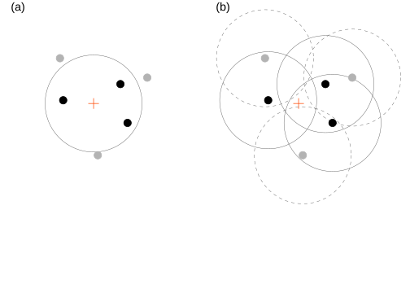
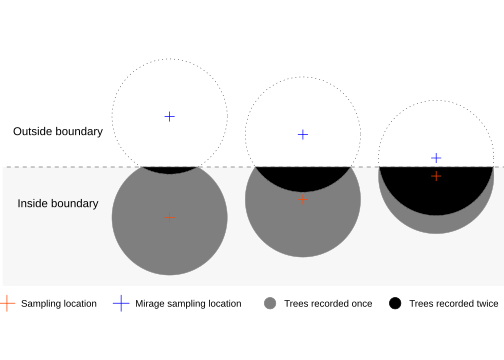
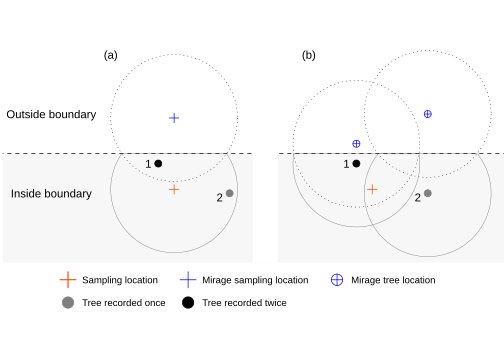
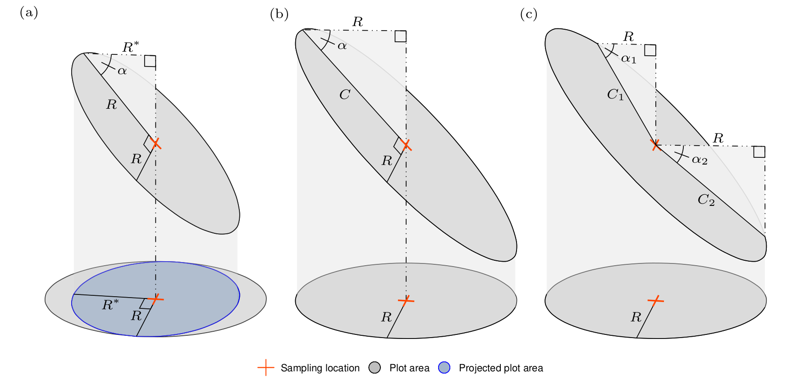
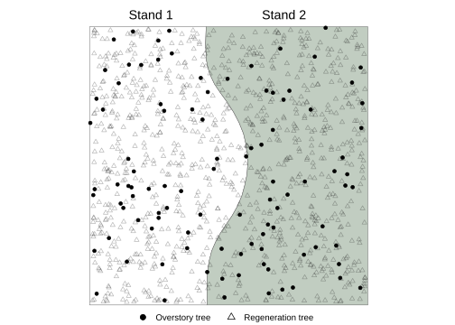
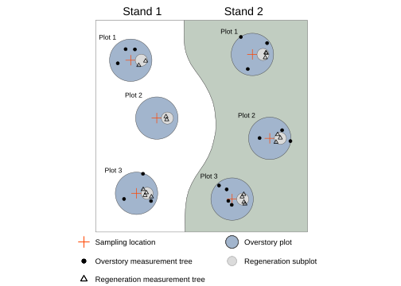
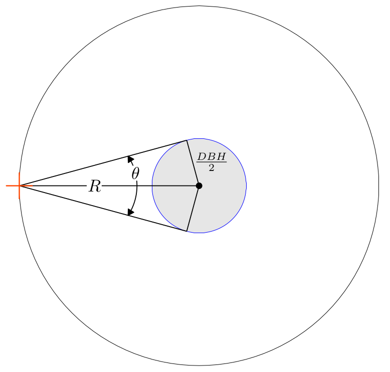
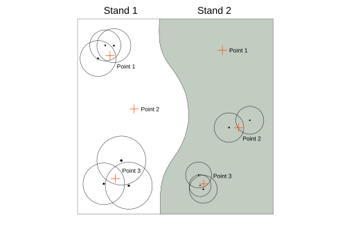
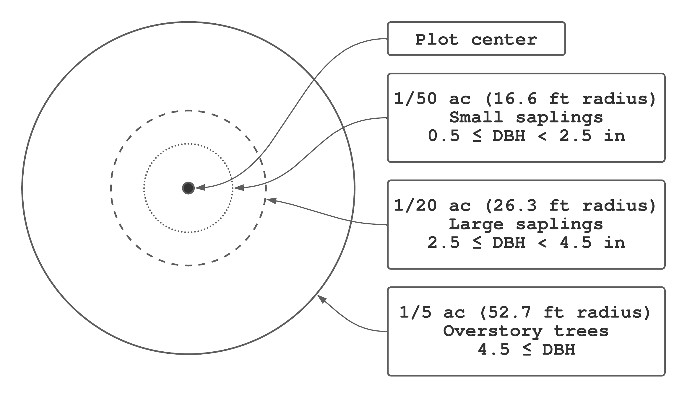
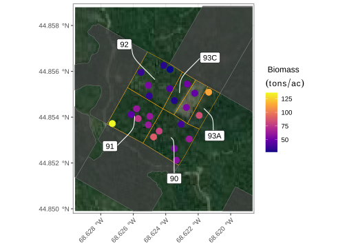

Chapter 12 Estimating forest parameters
Building on statistical concepts developed in Chapter 11, this chapter covers the basic steps and considerations needed to estimate forest parameters from a sample.116 We generalize and expand on these concepts to accommodate more advanced forestry applications in Chapter 13.
12.1 Sampling units for forestry applications
Collecting a sample used to estimate forest parameters is typically accomplished in three steps. First, sample observation locations, selected using some random mechanism, are placed within the forest. Second, a rule is used to select measurement trees around each location. Third, for each location, tree measurements are expanded to the desired per unit area basis and summarized to represent one observation within the sample. The most common rules for selecting measurement trees are plot sampling and point sampling.
Plot sampling is applied in many forestry applications, particularly in long-term monitoring efforts. A fixed-area plot is positioned at each location and trees in the plot boundary are measured. A location can define the center for a circular plot, corner for a rectangular plot, or used to position more complex plot shapes and configurations such as plot clusters or nested plots of different sizes. Under the plot sampling rule, all trees in the population have equal probability of being measured.
Point sampling is also a very common approach to tree selection and a popular method used to cruise timber. Under point sampling, the probability of selecting a tree in the population for measurement is conditional on some function of its size. For this reason, the approach is often called probability proportional to size (PPS) sampling. Depending on the survey objectives, compared with plot sampling, point sampling can offer greater efficiency from a field effort and statistical standpoint. In general, there are gains in efficiency when trees are preferentially selected for measurement based on a size attribute related to the parameter of interest. For example, if we’re interested in estimating volume, it’s more efficient to select measurement trees proportional to their basal area (because basal area and volume are strongly related). However, if we’re interested in estimating tree density (i.e., number of trees per unit area) or growth rates, then plot sampling would be the preferred approach.
The next section connects forestry applications with concepts from Chapter 11. Specifically, we introduce the areal sampling frame, which takes the place of the list sampling frame introduced in Section 11.2.2. For the applications covered here, the areal sampling frame is used for both plot and point sampling. Then, because it’s conceptually easier, we introduce plot sampling, expansion factors, boundary effects, and other related topics. This is followed by point sampling and how expansion factors and other sampling considerations change under this tree selection rule. The chapter ends with a series illustrations using toy and real datasets.
12.2 Areal sampling frame
Recall from Section 11.2.2, SRS and related probability sampling methods require a sampling frame to select the sample. For the Harvard Forest biomass analysis presented in Section 11.3.5, and examples you might have encountered in other applications, the sampling frame is viewed as a list of all population units from which sampling units are selected using a random mechanism. The sampling frame used for the Harvard Forest biomass analysis was created by placing a grid of equal-size squares over the forest extent (Figure 11.3). The grid delineated the \(N\) population units and the sampling frame list comprised each unit’s index in 1 through \(N\). Sampling units were then identified using \(n\) random integers in the range 1 to \(N\). This is a valid and intuitive approach to sample selection. A geographic information system (GIS) or R’s spatial data packages (see, e.g., Pebesma and Bivand (2023) and Brunsdon and Comber (2019)) can grid, or tessellate, the population’s geographic extent with equal-area geometric shapes such as rectangles or hexagons. Here, tessellate means completely cover a surface using equal-area, non-overlapping shapes. Creating such a grid is straightforward while behind a computer; however, logistical challenges encountered in the field make such approaches rare for forestry applications.
An alternative, and more common approach in forestry, is to rely on an areal sampling frame. The areal sampling frame allows for selection of any point location defined using a geographic coordinate, e.g., longitude and latitude, within its geographic extent. This extent is defined by one or more polygon(s) that delineate the population’s geographic boundary. Sampling locations are identified by points placed at random within the areal extent.
Clearly, selecting sampling units from a list sampling frame is different from selecting a set of points that define sampling locations from the infinite number of points within an area. Fortunately, much of the statistical theory we rely upon to yield valid inference is shared between list and areal sampling frames. However, use of an areal sampling frame requires some survey design, data collection, and analysis considerations that are covered in this and subsequent chapters.
12.3 Plot sampling
As noted in the beginning of this chapter, plot sampling is a common approach for collecting forest inventory data used to learn about population parameters. Here, fixed-area plots, often circular or rectangular in shape, are positioned at each sampling location selected using an areal sampling frame. Then all trees in the plot boundary, belonging to the population of interest, are measured. The criteria for when a tree is “in” the plot are typically defined in the survey field measurement protocol, e.g., a standing tree is measured if the center of its stem at ground level is within the plot boundary. The survey objectives define the population(s) of interest. For example, in a timber cruise we might measure only marketable trees, i.e., live stems of a certain DBH, species, and log quality, or in an Emerald Ash Borer (EAB) forest health assessment we might measure live and dead ash species, or a regeneration survey might measure seedlings and saplings of desirable species.
In practice, we’re almost always interested in estimating parameters for multiple populations. Sometimes the frequency of trees comprising different populations is different within a given area. For example, say we’re interested in assessing regeneration potential and timber volume of a naturally regenerated uneven-aged stand. These two stand characteristics, i.e., regeneration and overstory, are viewed as two different populations. Generally such stands have more seedlings and saplings than larger overstory trees on a per unit area basis. Hence, an ideal large plot size for the overstory trees would likely result in excessive time spent measuring seedlings and saplings, conversely an ideal small plot size for the regeneration would include too few overstory trees to provide an accurate estimate of timber volume using a feasible number of plots. The solution is to co-locate plots sized appropriately for the population of interest, often with smaller plots nested within larger plots. This might look like a 1/1000-th acre regeneration plot located within a 1/20-th acre overstory plot. Smaller nested plots are often referred to as subplots.
Using an areal sampling frame for SRS means there is a possibility that plot areas overlap if sampling locations are too close to one another. Overlapping plots is tantamount to sampling with replacement. In practice, when we wish to use SRS without replacement, we avoid plot overlap by placing sampling locations on a systematic grid, which itself is positioned using some random mechanism, see, e.g., Figure 1.2 for illustration and Systematic Random Sampling in Section 13.1 for details.
When using plot sampling, all trees have equal probability of selection for measurement. More specifically, a tree’s probability for selection equals the plot area on which it’s measured divided by the area of the population’s geographic extent. These ideas, further developed in Section 12.3.1 and illustrated in Section 12.3.7, are key to expanding tree measurements to the desired per unit area basis (e.g., per acre or ha) and computing plot-level summaries that represent one observation within the sample.
12.3.1 Expansion factors and estimates
In most forestry applications, estimates are expressed on a standard per unit area basis (i.e., acre or ha). This means that at some point in the analysis we need to scale tree measurements to the desired per unit area basis. For example, recall in Section 11.1.5 we were interested in estimating the average biomass (Mg/ha) on the Harvard Forest. However, because our sampling units (i.e., plots) were 0.25 ha, we needed to first multiply the total tree biomass measured on each 0.25 ha unit by 4 (i.e., 1/0.25) to express them on the desired per ha basis. Here, the value 4 is referred to as an expansion factor. An expansion factor is a value used to scale measurements expressed on one area basis to another area basis. In the Harvard Forest analysis, the individual tree measurements were summarized to the 0.25 ha plot in advance and the expansion factor was simply applied to the plot-level summaries to arrive at the desired per ha expression.

FIGURE 12.1: Two perspectives of measurement tree selection using a fixed-area circular plot. (a) Plot-centered, where the circle identifies the boundary of the plot. (b) Tree-centered, where circles identify each tree’s inclusion zone with solid and dashed lines corresponding to measurement and non-measurement trees, respectively.
To better understand expansion factors it’s instructive to consider two different perspectives for measurement tree selection. In the preceding section, our description of measurement tree selection takes a plot-centered perspective, i.e., as illustrated in Figure 12.1(a), a plot boundary is established at a sampling location then those trees in the plot are measured. Alternatively, we can take a tree-centered perspective where an imaginary plot—identical in shape and size to the plot intended for the sampling location—is established using each tree’s location. The tree’s imaginary plot is called its inclusion zone and is illustrated in Figure 12.1(b).117 Then, all trees with inclusion zones containing the sampling location are measured. Notice, in Figure 12.1, both the plot-centered and tree-centered perspective result in the same set of measurement trees.
The \(j\)-th tree’s measurements are scaled to the per unit area using the tree expansion factor, or tree factor (TF) for short, defined as \[\begin{equation} \text{TF}_j = \frac{\text{unit area}}{\text{inclusion zone area}_j}. \tag{12.1} \end{equation}\] In most applications, the unit area numerator is 43,560 (ft\(^2\)/ac) or 10,000 (m\(^2\)/ha) and the denominator is the \(j\)-th tree’s inclusion zone area in ft\(^2\) or m\(^2\). Regardless of the measurement system or chosen base units, the TF is the number of trees per unit area the given measurement tree represents.
As illustrated in Figure 12.1, under plot sampling, a tree’s inclusion zone equals the plot area used to sample the population to which the tree belongs. Hence, following (12.1), all trees measured on a given plot size will have the same TF.
We’re careful to note “population” in the preceding paragraph because it’s often the case that different populations are measured using different plot sizes within the same survey effort. For example, following the description of overstory and regeneration plots in Section 12.3, a tree measured on the 1/20-th acre (0.05 ac or 2178 ft\(^2\)) fixed-area overstory plot will have a 0.05 acre inclusion zone and represents \(\text{TF} = 43560/2178 = 20\) trees per acre. Similarly, a seedling or sapling measured on the 1/1000-th acre (0.001 ac or 43.56 ft\(^2\))118 subplot will have a 0.001 acre inclusion zone and represent \(\text{TF} = 43560/43.56 = 1000\) trees per acre.
The per unit area expansion factor for the \(j\)-th tree’s continuous or binary variable measurement (e.g., basal area, volume, biomass, logs, live/dead) is computed using \[\begin{equation} x_j \left(\text{units}/\text{unit area}\right) = x_j \left(\text{units}/\text{tree}\right) \cdot \text{TF}_j \left(\text{trees}/\text{unit area}\right), \tag{12.2} \end{equation}\] where \(x_j\) represents the variable measurement in the given units.
For example, say the \(j\)-th tree measured on a 0.05 acre plot had a volume \(v_j\) equal to 10.4 ft\(^3\). Given the tree’s TF\(_j\) equals 20 trees per acre, its expanded volume is \[\begin{align*} v_j \left(\text{ft}^3/\text{acre}\right) &= v_j \left(\text{ft}^3/\text{tree}\right)\cdot \text{TF}_j \left(\text{trees}/\text{acre}\right)\\ &= 10.4 \cdot 20 \\ &= 208, \end{align*}\] with each term’s units added in parentheses.
Following (12.2), a general formula to expand the \(j\)-th tree’s DBH to basal area (BA) per unit area is \[\begin{equation} \text{BA}_j \cdot \text{TF}_j = c\cdot\text{DBH}^2_j \cdot \text{TF}_j, \tag{12.3} \end{equation}\] where \(c\)=0.005454 if DBH is measured in inches and BA is expressed in ft\(^2\), or \(c\)=0.00007854 if DBH is measured in cm and BA is expressed in m\(^2\).119
So, for example, if the \(j\)-th tree measured on a 0.05 acre plot had a DBH of 10 inches, its basal area per acre is \[\begin{align*} \text{BA}_j \left(\text{ft}^2/\text{acre}\right) &= \left(c\cdot \text{DBH}^2\right) \left(\text{ft}^2/\text{tree}\right)\cdot \text{TF}_j \left(\text{trees}/\text{acre}\right)\\ &= 0.005454 \cdot 10^2 \cdot 20 \\ &= 10.908. \end{align*}\]
For a given sampling location, the estimate for number of trees per unit area is the sum of the measurement trees’ TF, i.e., \(\sum^m_{j=1}\text{TF}_j\), where \(m\) is the number of measurement trees. For plot sampling, this summation reduces to \(m\!\cdot\!\text{TF}\) where TF is the constant tree expansion factor for all trees measured on the plot.120
Similarly, the sampling location’s per unit area estimate for other variables is the sum of its per unit area tree measurements. Following the examples above, a plot’s volume and basal area per unit area estimates are \(\sum^m_{j=1}v_j\cdot \text{TF}_j\) and \(\sum^m_{j=1}c\cdot\text{DBH}^2_j\cdot \text{TF}_j\), respectively. We refer to tree expansion and summation for each plot as the plot-level summary.
Taking the tree-centered perspective has several advantages. First, as we’ve just demonstrated, it aids in introducing tree expansion factors. Second, from a practical computing standpoint, it leads to a single analytical workflow developed in Section 12.5 that yields population parameter estimates for plot and point sampling data. Third, it helps make clear the connection between forest sampling based on an areal sampling frame and broader survey sampling theory, see, e.g., Grosenbaugh (1958), Oderwald (1981), Roesch, Green, and Scott (1993), and Gregoire and Valentine (2007). Fourth, as explored in Section 12.3.4, it allows us to more easily recognize and understand statistical issues that can arise when implementing survey designs, as well as possible remedies to these issues.
12.3.2 Sample-based estimates
For \(n\) sampling locations, the corresponding \(n\) per unit area plot-level summaries of a given variable (see Section 12.3.1) are the sample observations used to estimate population parameters via estimators provided in Section 11.3. Following notation in Section 11.3, the \(n\) plot-level summaries are the \(x_i\), for \(i = 1, 2,\ldots, n\), used to compute the sample mean, standard error of the mean, and subsequent confidence intervals following (11.15), (11.21), and (11.31), respectively. Estimates for totals, e.g., total basal area or volume, for the population follow from the per unit area estimates as described in Section 11.3.3 with the simple change of replacing population size \(N\) with forest area \(A\) that is in the same units as the per unit area means.
Computation of estimates for several variables are illustrated in Section 12.3.7.
12.3.3 Finite population correction
While we took great pains to introduce the FPC in Section 11.3, rarely is it used in forest inventory. Recall, the FPC only applies to SRS and serves to reduce the standard error of the mean to account for the fact that once measured an observation is not returned to the population for subsequent selection and remeasurement. Also recall, when the sampling fraction is small, e.g., less than 2%, the FPC has a negligible effect and we can simplify our lives by removing it from the standard error formula. The rarity of the FPC’s use in forestry applications is because we typically observe a very small portion of the population.
Under plot sampling, if a substantial portion of the forest area is sampled and the FPC is warranted. In such cases, the sampling fraction \(n/N\) in the FPC can be replaced with the sampling intensity computed as the sampled area divided by the total forest area, i.e., \((n\!\cdot\!a)/A\), where \(n\) is the sample size (i.e., number of plots) of fixed-area \(a\) and \(A\) is the area of the population’s extent. Specifically, the standard error of the mean defined in (11.20) becomes \[\begin{equation} s_{\bar{x}} = \sqrt{\left(1-\frac{(n\cdot a)}{A}\right)\frac{s^2}{n}}. \tag{12.4} \end{equation}\]
One can argue that for surveys that rely on an areal sampling frame, the FPC is never applicable because sampling locations are selected from an infinite number of possible locations. This argument is particularly compelling for point sampling, introduced in Section 12.4, where there is no notion of area sampled and hence no sampling intensity to compute.
12.3.4 Boundary effects
The validity of plot and point sampling requires the probability of selecting a tree for measurement is proportional to the tree’s inclusion zone. It turns out, if any portion of a tree’s inclusion zone falls outside the forest boundary then that tree has a lower than expected probability of selection. This reduced probability can result in biased estimates, referred to as boundary slopover bias. This bias can, and should, be corrected in the field using methods found in most forest measurement books, see, e.g., Burkhart, Avery, and Bullock (2018). Kershaw et al. (2016) and Gregoire and Valentine (2007) for an in-depth tour of methods proposed to correct boundary slopover bias.
Below, we review the mirage and walkthrough methods, both are easy to implement and common in practice. Both methods effectively correct for those trees with inclusion zones that extend beyond the boundary. We introduce the methods using circular plots, but they can also be applied for non-circular plots.
The mirage method was proposed by Schmid (1969).121 The method can be applied when the boundary near the plot in question is straight (or made up of straight segments with well-defined corners) and you are able to work outside the boundary. The method is implemented using the following steps.
- Establish the plot center. Measure all trees that fall inside the plot and are also inside the boundary. If any portion of the plot is over the boundary, then implement Step 2.
- Determine the bearing with the shortest distance \(d\) from the plot center to the boundary. Establish a “mirage” (i.e., temporary) plot center along the bearing at distance \(d\) outside the boundary. From that mirage plot center, measure all trees that fall inside the mirage plot and also inside the boundary. Add these mirage plot measurement trees to the measurement trees recorded in Step 1.
Figure 12.2 shows three fixed-area circular plots with increasing amounts of boundary overlap. Following Step 2, above, the mirage sampling locations are established at distance \(d\) outside the boundary. The shaded regions within each sampling location plot show how many times each measurement tree should be recorded. Notice, those trees that fall within the region where the sampling location plot and mirage plot overlap are recorded twice.

FIGURE 12.2: Three fixed-area circular plots with increasing boundary overlap. Boundary indicated by the dashed line. Miarge plots outlined with dotted line.
Consider Figure 12.3 to build some intuition for how the mirage method works. Like Figure 12.1, Figure 12.3 shows measurement tree selection from a plot- and tree-centered perspective. Figure 12.3(a) shows a plot with boundary overlap and two measurement trees. Following the mirage method, tree 1 is recorded twice because it falls within the region where the mirage plot overlaps the sampling location plot, and tree 2 is recorded only once because it does not fall within the region of overlap. Double counting tree 1 effectively corrects for the fact that its inclusion zone area is reduced by the amount extending beyond the boundary. Given this notion, consider the corresponding tree-centered view in Figure 12.3(b) where a mirage tree inclusion zone has been established for each measurement tree. For a given tree, notice the inclusion zone area outside boundary is equal to the mirage inclusion zone area inside the boundary—effectively correcting the inclusion zone area reduction, i.e., making it whole. It might help to think of that portion of a tree’s inclusion zone area that extends beyond boundary is folded back onto itself along the boundary. The sampling location falls within tree 1’s inclusion zone and inclusion zone correction region; hence, that tree is recorded twice. For tree 2, the sampling location falls within its inclusion zone but not its inclusion zone correction region; hence, it’s recorded only once.

FIGURE 12.3: Plot-centered and tree-centered view of the mirage method using two example trees.
The walkthrough method was developed by Ducey, Gove, and Valentine (2004). This method follows the same basic principles as the mirage method, but is more is more general and works well even if the boundary near the plot in question is not straight and/or you’re not able to work outside the boundary. The method is implemented using the following steps.
- Establish the plot center. Measure all trees that fall inside the plot and are also inside the boundary.
- Identify each tree in the plot that is closer to the boundary than to the plot center. For each of these trees, take the bearing from the plot center to the tree and also measure the distance \(d\) from the plot center to the tree. Then, following this bearing, walk from the tree for distance \(d\). The point at distance \(d\) from the tree (i.e., where you stop walking) is called the “walkthrough point.” If the walk-through point is outside the boundary, then the tree is recorded twice; otherwise, the tree is recorded only once. It doesn’t matter how many times you cross the boundary on the way to the walkthough point, it’s whether the walkthrough point is inside or outside the boundary that determines if the tree is recorded once or twice. It’s only necessary to walk to the walkthrough point if it’s not obvious whether the point is inside the forest.
Consider the example in Figure 12.4. Here a fixed-area circular plot center falls close to a boundary. Six trees fall in the plot and boundary. Each tree’s walkthrough point is also identified in the figure. In practice it’s likely that only trees 1, 2, 5, and 6 would need to be considered using the walkthrough method, as trees 3 and 4 are clearly closer to the plot center than they are to the boundary. Trees 1 and 6 have walkthrough points outside the boundary so they are recorded twice. All other trees have walkthrough points within the boundary and therefore are recorded only once.

FIGURE 12.4: Fixed-area circular plot indicated by the solid line that overlaps a boundary indicated by the dashed line. Six trees fall in the plot. Arrows indicate direction and distance to walkthough points denoted with asterisked tree number.
12.3.5 Slope corrections
Forest parameters are reported on a horizontal land area basis (e.g., tons per hectare or volume per acre). Horizontal areas are delineated on the horizontal plane. The land surface, with all its interesting terrain features, can be projected onto the horizontal plane; however, this projection results in some distortion that we must consider. The key issue here is that a fixed area plot established on a slope (i.e., oblique plane), has a smaller area when projected onto the horizontal plane. Hence, tree factors computed for horizontal plot areas should not be applied to trees measured on sloped plots. Plots that fall on a slope require slope correction prior to use in estimation.
Let’s build some intuition about the need for slope correction. Say we’re using a fixed-area circular plot with radius \(R\) to conduct our cruise. If this circular plot was established on an oblique plane with slope \(\alpha\), the plot shape when projected onto the horizontal plane becomes an ellipse with major radius \(R\), minor radius \(R^\ast = \cos(\alpha)R\), and area \(\pi RR^\ast\) (which is less than \(\pi R^2\)). This relationship is illustrated in Figure 12.5(a), where the upper sloped plot area is a circle with radius \(R\) that becomes an ellipse when projected down onto the horizontal plane. Importantly, the area of this projected ellipse is smaller than \(\pi R^2\), hence applying the tree factor computed assuming an area of \(\pi R^2\) will cause downward bias in resulting estimates.

FIGURE 12.5: Illustration of how fixed-area circular plot dimensions change when projected between the horizontal (lower) and oblique (upper) planes. (a) Plot area when projecting a circular plot on an oblique plane onto the horizontal plane. (b-c) Examples used to find the oblique plane plot’s radius and critical distance given \(R\) and slope angle \(\alpha\).
There are a few approaches for slope correction. The most general is to use horizontal distance for all measurements, regardless of plot slope. So, if you had a plot that falls on an oblique plane with slope \(\alpha\), the plot shape becomes an ellipse with minor axis radius \(R\) perpendicular to the slope, major axis radius \(C = R/\cos(\alpha)\) parallel with the slope, and area \(\pi R C\). Once projected to the horizontal plan this elliptical plot has the desired plot area of \(\pi R^2\) (i.e., \(C = R\) when \(\alpha = 0\)). This projection and associated dimensions are illustrated in Figure 12.5(b). In practice, we don’t actually lay out an elliptical slope plot (that would be painful), rather we check if each tree around the sloped plot center is within the corresponding horizontal plot radius—if a tree is within the horizontal plot radius then it’s a measurement tree.
Checking if a tree is “in” or “out” of the elliptical plot is straightforward once you recognize that it amounts to computing a right triangle’s hypotenuse length with known angle \(\alpha\) and adjacent side \(R\), then comparing the hypotenuse length to the distance from the plot center to the tree in question. We’ll call this hypotenuse \(C\), which stands for a tree’s critical distance. If the slope distance from the plot center to the tree is smaller than the tree’s critical distance, then it’s a measurement tree.
A tree’s critical distance is determined by the slope between plot center and the tree’s location. The \(j\)-th tree has critical distance \(C_j = R/\cos(\alpha_j)\), where \(\alpha_j\) is the slope from the plot center to the center of the tree’s stem (where the slope measurement is taken parallel to the ground). This slope can be found using a clinometer or laser rangefinder that is able to calculate slope.
For example, consider Figure 12.5(c) and say we’d like to computed a critical distance for a tree positioned along the direction indicated by line \(C_1\). Using a clinometer you find slope \(\alpha_1\) is 30 degrees. The cruise protocol calls for circular plot with \(R=26.33\) (ft) (horizontal distance radius of a 1/20-th acre plot). The tree’s critical distance is then \(C_1 = R/\cos(\alpha_j) = 26.33/\cos(30) = 30.4 (ft)\). So the tree in question must be within \(30.4\) (ft) of the plot center to be a measurement tree. Say the next tree is positioned along the \(C_2\) line. Using a clinometer, you find the slope \(\alpha_2\) is 40 degrees. So, the tree’s critical distance is \(C_2 = R/\cos(\alpha_j) = 26.33/\cos(40) = 34.37\) (ft).122
The slope correction approach described above is general and will work for settings where the slope is not constant across the plot area. Many modern laser range finders report horizontal distance and hence automatically correct for slope. Using such a device, simply measure the horizontal distance from the plot center to each possible measurement tree. Those trees with horizontal distance (to the tree center) less than \(R\) are measurement trees. These results will match the time and math intensive approach to finding each tree’s critical distance. This approach is also most commonly used in national forest inventories and similar inventories where accuracy and repeatability is of key importance.
There are two other approaches to slope correction often seen in practice.
Radius adjustment uses a larger circular plot on the slope that once projected to the horizontal plane equals \(\pi R^2\) (Bryan 1956).
Tree factor adjustment uses a circular plot with radius \(R\) on the slope but compute a plot specific tree factor that accounts for the resulting smaller plot area when projected onto the horizontal plane (Beers 1969).
Both approaches require a measurement that captures the overall plot slope.
To apply the radius adjustment approach, establish a circular plot on the slope with radius \(R^\ast = R/\sqrt{cos(\alpha)}\). This circular plot defined by radius \(R^\ast\) on the slope will be an ellipse with area \(\pi R^2\) when projected onto the horizontal plane. This approach works because the inclusion zone area of the projected ellipse equals that of the intended plot on the horizontal plane. This approach might be a good option for a timber cruise as it allows you to keep a constant radius which greatly simplifies identifying measurement trees using a tape from the plot center. Foresters using this approach often rely on a table that provides a scaling factor for \(R\) given different slope ranges. For example, if your cruise protocol calls for circular plot with \(R=26.33\) (ft) (horizontal distance) and the plot falls on a \(\alpha = 30\) (degree) slope the adjusted radius is \(R^\ast = R/\sqrt{\cos(\alpha)} = 28.3\) (ft) or using the equivalent scaling factor \(R^\ast = r^\ast R\) where \(r^\ast = 1/\sqrt{cos(\alpha)} = 1.07\). To create your own scaling factor table to take into the field, compute \(r^\ast\) for a range of slopes (see, Exercise?).
To apply the tree factor adjustment approach, establish a circular plot on the slope with radius \(R\), as if it were on the horizontal plane. Because the area of this slope plot is smaller than \(\pi R^2\) when projected onto the horizontal plane, the tree factor for measurement trees needs to increase accordingly. Specifically, the tree factor for measurement trees on the slope plot is \(TF^\ast = TF/\cos(\alpha)\), where \(TF = \text{unit area}/(\pi R^2)\) (following (12.1)), or, equivalently, \(TF^\ast= \text{unit area}/(\pi \cos(\alpha) R^2)\), where the denominator is the area of the horizontally projected ellipse, i.e., the blue area in Figure 12.5(a). This approach is also easy to implement, but requires that you record all plot slopes so you can compute corresponding tree factors after the cruise. As an example, say your horizontal plot radius is \(R=26.33\) (ft) which results in a \(TF = 43560 / (\pi 26.33^2) = 20\). The tree factor for trees measured on the oblique plot with a slope of 30 (degrees) and \(R=26.33\) (ft) is \(TF^\ast = TF/\cos(\alpha) = 23.09401\).
12.3.6 Effect of plot size on variance
Plot size, i.e., the area covered by the sampling unit, has an effect on variance and hence inferences that involve variance such as confidence intervals and sample size calculations. For many variables measured in forestry applications, the variance of measurements collected on small plots is greater than the variance of measurements collected on larger plots. For example, the variance in biomass measurements (Mg/ha) taken on 0.25 ha plots will be larger than variance in biomass measurements (Mg/ha) on 0.5 ha plots.
Large plots tend to have smaller variance because they average over small-scale horizontal forest structure, e.g., caused by competition and disturbance factors such as harvesting, windthrow, disease, or fire. Effect of plot size on variance is diminished as stand structure becomes more uniform. For example, we expect a plantation to have a weaker plot size to variance relationship, compared with structurally complex mixed-species uneven-aged stands.
Freese (1962) offers the following equation to approximate the relationship between plot size and variance \[\begin{equation} s_2^2 = s_1^2 \sqrt{\frac{a_1}{a_2}}, \tag{12.5} \end{equation}\] where plot size \(a_1\) has variance \(s^2_1\) and plot size \(a_2\) has variance \(s^2_2\). One can replace the variances in (12.5) with their corresponding coefficients of variation (i.e., \(CV_1 = s^2_1/\bar{x}_2\) and \(CV_2 = s^2_2/\bar{x}_2\)).
For example, following (12.5), if the variance of pulpwood volume per acre on 1/4 acre plots is \(s_1^2 = 50\), the variance in pulpwood volume per acre on a 1/10 acre plot is approximately \[\begin{align*} s_2^2 &= 50\sqrt{\frac{0.25}{0.1}}\\ & = 79.06. \end{align*}\]
Although plot size is often chosen based on experience or an existing field sampling protocol, the relationship between plot size and expected variance can provide an approach to select plot size and sample size based on allowable error and cost constraints. Cost comes into play here because “time is money” and to reach the same standard error there are trade-offs between sampling more small plots versus few large plots. For example, if travel time between many small plots is large relative to the time needed to take measurements on few large plots, then one would favor a sampling design where fewer large plots are selected.
12.3.7 Illustration
Figure 12.6 shows a toy dataset that we’ll use to illustrate estimation via plot sampling. The figure shows a forest area (1.32 ac) that delineates tree populations of interest. The forest is divided into two stands (Stand 1 is 0.64 ac and Stand 2 is 0.68 ac) and within each a distinction is made between overstory and regeneration trees. This partitioning allows us to define at most four populations, Stand 1 overstory trees, Stand 1 regeneration trees, Stand 2 overstory trees, and Stand 2 regeneration trees. These are simulated data, meaning we created them, and as a result we have measurements on all trees, i.e., a census. These measurements allow us to compute the population parameter values of interest that are given in Table 12.1. For instructional purposes, we can compare these parameter values to their corresponding estimates.123

FIGURE 12.6: Toy dataset used to illustrate sample-based estimation.
| Stand | Trees/ac | Basal area (ft\(^2\)/ac) | Volume (ft\(^3\)/ac) | Trees/ac |
|---|---|---|---|---|
| 1 | 31.965 | 26.364 | 739.74 | 319.65 |
| 2 | 34.150 | 13.018 | 299.98 | 341.50 |
The sample comprises trees measured on six overstory plots with accompanying regeneration subplots. Overstory and regeneration plots are circular fixed-areas with 24 ft and 6.8 ft radius, respectively. Plot sampling locations were selected at random (i.e., SRS) from each stand’s areal sampling frame and serve as the overstory plot centers. Regeneration subplots were located 12 ft east of overstory plot centers.124 On overstory plots, species, DBH (in), and height (ft) for all trees with DBH \(\ge\) 2 in were measured. Additionally, volume (ft\(^3\)) was estimated for measurement trees using allometric equations provided in Honer (1967). On regeneration subplots, the number of trees by species with height greater than 2 ft and DBH \(<\) 2 in were recorded.

FIGURE 12.7: A sample from the populations shown in Figure 12.6. The sample comprises three fixed-area circular plots randomly located within each stand. Regeneration subplots are nested within overstory plots.
Our aim in this illustration is to step through the calculations to estimate number of trees, basal area, and volume per acre, as well as their stand totals. To better focus on these steps, we initially limit our analysis to overstory plot data in Stand 1. Later, an efficient workflow for these and additional estimates is developed in Section 12.5 and applied to both stand’s overstory and regeneration data.
Table 12.2 provides overstory tree measurements for the three Stand 1 plots. Notice in Figure 12.7, there are no overstory trees on Plot 2 in Stand 1. It’s critical that absence of trees on a given plot is included in subsequent estimates—meaning a plot with no trees is part of the sample, reflects a characteristic of the population, and hence needs to be included as a zero when computing population parameter estimates. We include a line for Plot 2 in Table 12.2 with zero DBH and volume values to remind us to include these values in subsequent computations.
| Plot | DBH (in) | Volume (ft\(^3\)) |
|---|---|---|
| 1 | 11.3 | 17.8 |
| 1 | 9.8 | 14.5 |
| 1 | 10.7 | 17.9 |
| 2 | 0.0 | 0.0 |
| 3 | 14.8 | 33.6 |
| 3 | 15.4 | 36.6 |
| 3 | 13.1 | 28.9 |
We divide the estimation process into two steps.125 First, compute plot-level summaries for each variable. The plot-level summaries comprise each plot’s expanded and summarized tree measurements expressed on a per unit area basis (these are the sample observations). Second, use the plot-level summaries to compute the desired population parameter estimates.
Computing the plot-level summaries begins with calculating the TF used by all overstory trees measured on the 24 ft radius circular fixed-area plot. Following (12.1), the TF is \[\begin{align*} \text{TF} \left(\text{trees}/\text{ac}\right) &= \frac{\text{Unit area} \left(\text{ft}^2/\text{ac}\right)}{\text{Inclusion zone area} \left(\text{ft}^2/\text{tree}\right)}\\[0.5ex] &= \frac{43560}{\pi\cdot R^2} = \frac{43560}{\pi\cdot 24^2}\\ &= 24.07219, \end{align*}\] where \(R\) is the plot radius. This tree factor tells us that each tree measured on an overstory plot represents 24.07 trees per acre.
Next, we compute trees per acre for each of the \(n\)=3 plots. Referring to Table 12.2 to get the number of trees on each plot, the plot-level trees per acre are \[\begin{align*} \text{Plot 1:}&\; \sum^3_{j=1}\text{TF}_j = 3\cdot \text{TF} = 72.21656 \left(\text{trees}/\text{ac}\right),\\ \text{Plot 2:}&\; \text{TF}\cdot 0 = 0\left(\text{trees}/\text{ac}\right),\\ \text{Plot 3:}&\; \sum^3_{j=1}\text{TF}_j = 3\cdot \text{TF} = 72.21656 \left(\text{trees}/\text{ac}\right), \end{align*}\] where \(j\) is the tree index. Notice in the calculations above, because the TF is a constant we pull it out of the summation and drop its subscript.
Using DBH measurements in Table 12.2 and following (12.3), the plot-level basal area per acre are \[\begin{align*} \text{Plot 1:}&\; \sum^3_{j=1}c\!\cdot\!\text{DBH}^2_j\!\cdot\!\text{TF}_j = c\cdot (11.3^2\!+\!9.8^2\!+\!10.7^2)\!\cdot\!\text{TF}\\[-0.5em] &\qquad\qquad\qquad\quad\,\, = 44.4048 \left(\text{ft}^2/\text{ac}\right),\\ \text{Plot 2:}&\; \text{TF}\!\cdot\!0 = 0 \left(\text{ft}^2/\text{ac}\right),\\ \text{Plot 3:}&\; \sum^3_{j=1}c\!\cdot\!\text{DBH}^2_j\!\cdot\!\text{TF}_j = c\cdot\!(14.8^2\!+\!15.4^2\!+\!13.1^2)\!\cdot\!\text{TF}\\[-0.5em] &\qquad\qquad\qquad\quad\,\, = 82.42499 \left(\text{ft}^2/\text{ac}\right), \end{align*}\] where \(c = 0.005454\) and \(DBH_j\) is the \(j\)-th tree’s DBH. Like TF, the constant \(c\) can be pulled out of the summation.
Using volume measurements in Table 12.2 and following (12.2), the plot-level volume per acre are \[\begin{align*} \text{Plot 1:}&\; \sum^3_{j=1}v_j\!\cdot\!\text{TF}_j = (17.8\!+\!14.5\!+\!17.9)\!\cdot\!\text{TF}\\[-0.5em] &\qquad\qquad\;\,\,\, = 1208.42369 \left(\text{ft}^3/\text{ac}\right),\\ \text{Plot 2:}&\; \text{TF}\!\cdot\!0 = 0\left(\text{ft}^3/\text{ac}\right),\\ \text{Plot 3:}&\; \sum^3_{j=1}v_j\!\cdot\!\text{TF}_j = (33.6\!+\!36.6\!+\!28.9)\!\cdot\!\text{TF}\\[-0.5em] &\qquad\qquad\;\,\,\, = 2385.55355 \left(\text{ft}^3/\text{ac}\right), \end{align*}\] where \(v_j\) is the \(j\)-th tree’s volume.
For reference, we collected the plot-level summaries of number of trees, basal area, and volume per acre computed above into Table 12.3. Given the \(n\)=3 sample observations in Table 12.3, you’re back in the familiar territory for computing SRS means, standard deviations, standard errors, and confidence intervals covered in Section 11.3.
| Plot | Trees/ac | Basal area (ft\(^2\)/ac) | Volume (ft\(^3\)/ac) |
|---|---|---|---|
| 1 | 72.2166 | 44.4048 | 1208.4237 |
| 2 | 0 | 0 | 0 |
| 3 | 72.2166 | 82.425 | 2385.5535 |
The code below computes each variable’s mean (11.15), standard error of the mean (11.20), and 80% confidence interval. Following the discussion in Section 12.3.3, we replace the FPC sampling fraction (11.20) with the area-based sampling intensity.
A_ac <- 0.64 # Stand 1 acres.
a_ac <- pi * 24^2 / 43560 # Overstory plot area in acres.
n <- 3 # Sample size.
t <- qt(p = 1 - 0.2 / 2, df = n - 1) # t-value for 80% CI.
# Trees per acre.
trees_per_ac <- c(72.2166, 0, 72.2166)
x_bar_trees <- mean(trees_per_ac)
s_x_bar_trees <- sqrt((1 - n * a_ac / A_ac) * var(trees_per_ac) / n)
ci_trees <- c(x_bar_trees - t * s_x_bar_trees,
x_bar_trees + t * s_x_bar_trees)
x_bar_trees # Mean number of trees per acre.#> [1] 48.144#> [1] 7.4119 88.8769# Basal area per acre.
ba_per_ac <- c(44.4048, 0, 82.425)
x_bar_ba <- mean(ba_per_ac)
s_x_bar_ba <- sqrt((1 - n * a_ac / A_ac) * var(ba_per_ac) / n)
ci_ba <- c(x_bar_ba - t*s_x_bar_ba, x_bar_ba + t * s_x_bar_ba)
x_bar_ba # Mean basal area per acre.#> [1] 42.277#> [1] 1.9745 82.5787# Volume per acre.
vol_per_ac <- c(1208.4237, 0, 2385.5535)
x_bar_vol <- mean(vol_per_ac)
s_x_bar_vol <- sqrt((1 - n * a_ac / A_ac) * var(vol_per_ac) / n)
ci_vol <- c(x_bar_vol - t * s_x_bar_vol, x_bar_vol + t * s_x_bar_vol)
x_bar_vol # Mean volume per acre.#> [1] 1198#> [1] 32.696 2363.289The mean and associated confidence interval for each variable computed in the code above are collected into Table 12.5.
| \(\bar{x}\) | 80% CI | |
|---|---|---|
| Trees/ac | 48.144 | (7.412, 88.877) |
| Basal area (ft\(^2\)/ac) | 42.277 | (1.975, 82.579) |
| Volume (ft\(^3\)/ac) | 1197.992 | (32.696, 2363.289) |
Stand 1 total and associated confidence interval for each variable can be computed using (11.22) and (11.25). These estimators for the total are modified by replacing population size \(N\) with stand area in acres \(A\)=0.64 (as was demonstrated in the Harvard Forest biomass analysis toward the end of Section 11.3.5). Total estimates are given in Table 12.7. Importantly, notice that obtaining totals and associated confidence intervals is as easy as scaling mean per acre estimates given in Table 12.5 by \(A\).
| \(\hat{t}\) | 80% CI | |
|---|---|---|
| Trees | 30.812 | (4.744, 56.881) |
| Basal area (ft\(^2\)) | 27.057 | (1.264, 52.85) |
| Volume (ft\(^3\)) | 766.715 | (20.926, 1512.505) |
One final point. Using the code above, if you compute confidence intervals using a slightly higher confidence level, e.g., 90% or 95%, you’ll see the lower limit for each variable is negative (looking at either the mean or total estimates). Can this be correct? Yes, it simply reflects the large uncertainty in the estimates due to the small sample size and large variability among the three observations. Is this sensible? No, we cannot have a negative number of trees, basal area, or volume. These variables have support for values of zero and larger.
Think critically about the values you compute, and ask yourself if they make sense. It’s easy to make coding errors, i.e., bugs, and it’s common for such errors to be propagated through subsequent steps in an analysis before their result might be noticed. If you see something odd or unexpected, like a negative confidence limit on a positive support variable, check your code carefully. For example, even if the negative confidence limit is possible theoretically, it’s worth sequentially checking each code component that goes into computing the confidence limit. The sage words from famous computer scientist Brian W. Kernighan are as true today as they were when written in 1978:
The most effective debugging tool is still careful thought, coupled with judiciously placed print statements.
— Kernighan (1978)
12.4 Point sampling
Like plot sampling, introduced in Section 12.3, point sampling is a rule for selecting measurement trees around a sampling location. The Austrian forester Walter Bitterlich introduced point sampling in the forestry literature under the German name “Winkelsählprobe,” which translates into English as “angle count sampling” (Bitterlich 1952). Bitterlich named his method angle count sampling because basal area per unit area can be estimated by simply counting trees selected using an angle from a sampling location (Bitterlich 1952, 1984). Bitterlich’s ingenious method is most commonly used in timber cruises because of its ease of application, time efficiency, and flexibility to meet a range of inferential objectives. The time efficiency and flexibility come from the fact that you can match information collection effort with the desired level of inference. For example, if you’re only interested in estimating mean basal area per unit area, then a simple count (i.e., tally) of measurement trees across sampling locations is all that is needed. If you’d like to estimate a confidence interval for mean basal area per unit area, then simply keep track of the number of trees tallied at each sampling location. Estimating other variables such as volume, biomass, or trees per unit area typically requires additional measurements such as DBH. However, in some special cases you can even estimate volume or similar variables from a tally (see Section 12.4.6).
Shortly after Bitterlich’s 1952 publication, the American forester Lewis R. Grosenbaugh helped popularized the method, which he coined point sampling, among American foresters (Grosenbaugh 1952; Grosenbaugh and Stover 1957).126 Grosenbaugh (1958) generalized point sampling to estimate tree variables beyond basal area (e.g., volume, biomass, and density) and connected the method to existing probability proportional to size (PPS) sample survey theory. A few years later, Palley and Horwitz (1961) further detailed point sampling’s theoretical underpinnings by providing statistical proofs that mean and variance estimators are unbiased for several common sampling designs.
Under point sampling, a tree’s inclusion zone area, and hence its selection probability, is a function of a chosen characteristic. Here, the characteristic that determines a tree’s selection probability is typically related to its size, e.g., DBH or height, hence the reason point sampling is a PPS method. Timber cruises are typically conducted to estimate stand value and, for most stands, timber value is concentrated in large diameter trees. From a time efficiency standpoint, it’s logical that we spend our valuable field time measuring those trees that contribute most to parameters of interest, e.g., timber volume with associated standard error. This is the primary motivation and result of point sampling—when selection probability scales with tree size, large trees are measured more frequently than small trees.
This section focuses on horizontal point sampling which uses a tree’s basal area to determine its selection probability. It’s called horizontal point sampling because the forester projects the discerning angle horizontally from the sampling location toward each tree. Related sampling methods such as vertical point sampling, horizontal line sampling, and vertical line sampling are summarized in Kershaw et al. (2016). We focus on horizontal point sampling because it’s the most common in forest inventory and the general concepts are transferable to related sampling methods.
![Point sampling example with three trees around a sampling location. Trees are identified using filled circles with diameter equal to the tree's DBH. The red cross indicates the sampling location. (a) Fixed and known angle $\theta$ is projected from the sampling location and used to identify measurement (3), borderline (2), and non-measurement (1) trees. (b) Unfilled circles identify each tree's inclusion zone with $R_1$, $R_2$ and $R_3$ being the inclusion zone radius for Trees 1, 2, and 3, respectively. Inclusion zones delineated with solid lines identify measurement and borderline trees. Inclusion zones delineated with dashed lines identify non-measurement trees.](figures/pointTreeZone-1.png)
FIGURE 12.8: Point sampling example with three trees around a sampling location. Trees are identified using filled circles with diameter equal to the tree’s DBH. The red cross indicates the sampling location. (a) Fixed and known angle \(\theta\) is projected from the sampling location and used to identify measurement (3), borderline (2), and non-measurement (1) trees. (b) Unfilled circles identify each tree’s inclusion zone with \(R_1\), \(R_2\) and \(R_3\) being the inclusion zone radius for Trees 1, 2, and 3, respectively. Inclusion zones delineated with solid lines identify measurement and borderline trees. Inclusion zones delineated with dashed lines identify non-measurement trees.
Figure 12.8(a) illustrates a horizontal point sampling measurement tree selection rule. From a sampling location, the forester projects a known and fixed angle \(\theta\) toward each tree’s bole at breast height. Given a tree’s DBH and distance from the sampling location (i.e., the angle’s vertex) the angle may appear:
- wider than the tree bole, in which case the tree is not measured;
- the same width as the tree bole (i.e., the angle’s rays are tangent to the bole), in which case the tree is considered a borderline tree and a measurement determination will take some more effort, as we’ll describe below;
- narrower than the tree bole, in which case the tree is measured.
Applying this rule to the three trees in Figure 12.8(a), Tree 1 is not measured, Tree 2 is a borderline tree, and Tree 3 is measured. Here, again, depending on the inferential objectives, “measured” might imply you simply tally (i.e., add the tree to a tree count) or take detailed measurements of interest (e.g., DBH, height).
The angle gauge, relascope, and wedge prism are the most common tools used in practice to project the angle \(\theta\) from the sampling location to discern a tree’s measurement status (i.e., is the tree “in” or “out” of the tally). The angle gauge consists of a small piece of metal of known width, held a known distance from the forester’s eye which is positioned over the sampling location. The relascope, developed by Walter Bitterlich specifically for point sampling, is a sophisticated and multipurpose tool. The forester sights through the relascope’s eyepiece with their eye positioned over the sampling location. The relascope automatically corrects for slope (see Section 12.4.3) and allows the user to choose among different angles to maximize cruise efficiency (see Section 12.4.4). The wedge prism, introduced by Bruce (1955), is a ground and calibrated prism that refracts light at the desired angle. Unlike the angle gauge and relascope, the wedge prism, not the forester’s eye, is held over the sampling location. See Burkhart, Avery, and Bullock (2018), or similar practical guides, to learn how these tools are used.
Let’s begin building some intuition about point sampling by connecting measurement tree selection using an angle with a tree’s inclusion zone as developed in Section 12.3. Recall under plot sampling a tree is selected for measurement if its inclusion zone contains a sampling location (see, e.g., Figure 12.1(b)). Also, under plot sampling, all trees have the same inclusion zone area that is equal to the plot area used in the survey. Because all trees have the same inclusion zone, they have equal probability of selection for measurement and, following (12.1), the same tree factor.
Under horizontal point sampling a tree’s inclusion zone area, and hence it selection probability, is a function of its DBH. This notion is illustrated in Figure 12.8(b), where a tree’s circular inclusion zone area, defined by its radius (\(R\)), is proportional to its DBH. Like in plot sampling, a tree is selected for measurement if its inclusion zone contains a sampling location. However, unlike plot sampling, when a tree’s inclusion zone is a function of its DBH then its probability of selection is proportional to its DBH.
A tree’s inclusion zone radius (\(R\)) is called its limiting distance. This is because if the distance between the sampling location and the tree center is less than or equal to the tree’s limiting distance, then the tree is measured. If the distance between the sampling location and the tree center is greater than the tree’s limiting distance, then the tree is not measured. This relationship can be seen in Figure 12.8(b). Here, in particular, notice the borderline tree’s limiting distance, \(R_2\), equals the distance between the sampling location and the tree’s center. Figure 12.9 provides a closer look at a borderline tree. At the borderline, the tree is the maximum distance from the sampling location and still measured. Notice, in Figure 12.9, if the tree’s DBH is smaller or the tree is farther from the sampling location, then the angle would be wider than the tree and hence it would not qualify for measurement.

FIGURE 12.9: Horizontal point sampling example of a borderline tree.
In practice, when projecting the angle from the sampling location, if there is uncertainty about a tree’s status (i.e., is it a measurement tree or not) then additional measurements are needed to make a correct determination. This is done by measuring the tree’s DBH, computing its limiting distance, and checking that distance against the distance from the sampling location to the tree’s center. Even without competing brush or other factors that impair line of sight, it’s often difficult even for experienced foresters to identify borderline trees using an angle gauge, prism, or reloscope, see, e.g., work by Kim Iles and Fall (1988) who assessed professional cruisers’ skill in discerning borderline trees using a wedge prism.127 Incorrect status determination can introduce bias, hence it’s worth the extra time to conduct the limiting distance calculation and measurement needed for a correct determination.
For a fixed angle \(\theta\), the ratio between a tree’s DBH and its inclusion zone radius \(R\) is a constant \(k\). When tree DBH is in inches and plot radius \(R\) is in feet, the constant \(k\) in feet is \[\begin{equation} k = \frac{\text{DBH (in)}}{12 R \text{ (ft)}}. \tag{12.6} \end{equation}\] Similarly, when DBH is in centimeters and plot radius \(R\) is in meters, the constant \(k\) in meters is \[\begin{equation} k = \frac{\text{DBH (cm)}}{100 R \text{ (m)}}. \tag{12.7} \end{equation}\] Regardless of measurement system, the constant \(k=2 \sin\left(\frac{\theta}{2}\right)\).
If you know \(k\) (which is a function of the angle used) and you measure a tree’s DBH, then you compute its limiting distance in feet as \[\begin{equation} R = \frac{\text{DBH (in)}}{12 k \text{ (ft)} } \tag{12.8} \end{equation}\] or in meters as \[\begin{equation} R = \frac{\text{DBH (cm)}}{100 k \text{ (m)} }. \tag{12.9} \end{equation}\]
12.4.1 Expansion factors and per unit area estimates
Recall, from Section 12.3.1, the tree factor is the number of trees per unit area a given measurement tree represents. For the \(j\)-th measurement tree, (12.1) defines the tree factor as \[\begin{equation} \text{TF}_j = \frac{\text{unit area}}{\text{inclusion zone area}_j}, \tag{12.10} \end{equation}\] where, depending on your measurement system, the unit area numerator is 43,560 (ft\(^2\)/ac) or 10,000 (m\(^2\)/ha) and the denominator is the \(j\)-th tree’s inclusion zone area in ft\(^2\) or m\(^2\).128 For horizontal point sampling, the inclusion zone is circular with area equal to \(\pi R_j^2\). Because the \(j\)-th tree’s inclusion zone radius \(R_j\) depends on the tree’s DBH, its tree factor is DBH dependent.129
Using radius \(R_j\) defined in (12.8), the TF for the English system is \[\begin{equation*} \text{TF}_j = \frac{43560}{\pi R^2_j} = \frac{43560}{\pi \left(\text{DBH}_j/(12k) \right)^2} =\frac{43560k^2}{ \left(\pi/144\right)\text{DBH}^2_j}, \end{equation*}\] then scaling the numerator and denominator by 1/4 gives us the more revealing and convenient \[\begin{equation} \text{TF}_j = \frac{(1/4)43560k^2}{(1/4)\left(\pi/144\right)\text{DBH}^2_j} = \frac{10890k^2}{0.005454 \text{DBH}^2_j} = \frac{10890k^2}{\text{BA}_j}, \tag{12.11} \end{equation}\] where BA\(_j\) is the \(j\)-th tree’s basal area.
Similarly, using the definition of \(R_j\) from (12.9), the TF for the metric system is \[\begin{equation*} \text{TF}_j = \frac{10000}{\pi R^2_j} = \frac{10000}{\pi \left(\text{DBH}_j/(100k) \right)^2} =\frac{10000k^2}{ \left(\pi/10000\right)\text{DBH}^2_j}, \end{equation*}\] then scaling the numerator and denominator by 1/4 gives us \[\begin{equation} \text{TF}_j = \frac{(1/4)10000k^2}{(1/4)\left(\pi/10000\right)\text{DBH}^2_j} = \frac{2500k^2}{0.00007854 \text{DBH}^2_j} = \frac{2500k^2}{\text{BA}_j}. \tag{12.12} \end{equation}\]
As developed in Section 12.3.1, (12.2) defines the per unit area expansion factor for the \(j\)-th tree’s continuous or binary variable measurement (e.g., basal area, volume, biomass, logs, live/dead) as \[\begin{equation} x_j \left(\text{units}/\text{unit area}\right) = x_j \left(\text{units}/\text{tree}\right) \cdot \text{TF}_j \left(\text{trees}/\text{unit area}\right), \tag{12.13} \end{equation}\] where \(x_j\) represents the variable measurement in the given units.
It’s instructive to first consider a tree’s basal area expansion, which is called the basal area factor (BAF). Following (12.10) and (12.11), the English system BAF (with units included in parentheses) is \[\begin{align} \text{BAF}_j \left(\text{ft}^2/\text{acre}\right) &= \text{BA}_j \left(\text{ft}^2/\text{tree}\right) \cdot \text{TF}_j \left(\text{trees}/\text{acre}\right)\nonumber\\ &= \bcancel{\text{BA}_j} \cdot \left(\frac{10890k^2}{\bcancel{\text{BA}_j}}\right)\nonumber\\ &= 10890k^2, \tag{12.14} \end{align}\] and following (12.10) and (12.12), the metric system BAF is \[\begin{align} \text{BAF}_j \left(\text{m}^2/\text{ha}\right) &= \text{BA}_j \left(\text{m}^2/\text{tree}\right) \cdot \text{TF}_j \left(\text{trees}/\text{ha}\right)\nonumber\\ &= \bcancel{\text{BA}_j} \cdot \left(\frac{2500k^2}{\bcancel{\text{BA}_j}}\right)\nonumber\\ &= 2500k^2. \tag{12.15} \end{align}\]
Notice in (12.14) and (12.15) BAF depends only on the constant \(k\). As discussed earlier, \(k\) is determined by the angle \(\theta\) used to conduct the cruise.130 Therefore, given \(\theta\), the basal area per unit area represented by each measurement tree is constant. This is a remarkable result! It means that regardless of the measurement tree’s DBH, that tree represents the chosen BAF’s basal area per unit area. By extension, this means you don’t need to measure a tree’s DBH to determine its contribution to estimating basal area per unit area—all you need to know is if the tree is a measurement tree or not.
For example, say your chosen angle \(\theta\) results in a BAF = 10 (ft\(^2\)/acre). From the result above, we know that each measurement tree (regardless of its DBH) represents 10 ft\(^2\) of basal area per acre. If your chosen angle \(\theta\) results in a BAF = 4 (m\(^2\)/ha), then each measurement tree represents 4 m\(^2\) of basal area per hectare (again, regardless of its DBH).
Expanding variables other than basal area requires the tree’s tree factor, which means you need to measure its DBH and compute its basal area. The \(j\)-th tree’s tree factor is computed using (12.11) or (12.12), or the mathematically equivalent expression based on the chosen BAF \[\begin{equation} \text{TF}_j = \frac{\text{BAF}}{\text{BA}_j}. \tag{12.16} \end{equation}\]
For example, say you’re using a BAF = 10 (ft\(^2\)/acre) and the \(j\)-th measurement tree has a DBH of 16 (in) and volume of 45.8 (ft\(^2\)).131 Calculating the \(j\)-th tree’s volume per acre is a two step process. First, compute the tree’s tree factor using (12.16), as follows. \[\begin{align*} \text{TF}_j \left(\text{trees}/\text{acre}\right) &= \frac{\text{BAF} \left(\text{ft}^2/\text{acre}\right)}{\text{BA}_j \left(\text{ft}^2/\text{tree}\right)}\\ &= \frac{10}{0.005454\cdot 16^2}\\ &=7.16217. \end{align*}\] Then, scale the tree’s volume by its tree factor. \[\begin{align*} v_j \left(\text{ft}^3/\text{acre}\right) &= v_j \left(\text{ft}^3/\text{tree}\right)\cdot \text{TF}_j \left(\text{trees}/\text{acre}\right)\\ &= 45.8 \cdot 7.16217 \\ &= 328. \end{align*}\] So, that one measurement tree represents a volume of 328 (ft\(^3\)/acre).
For a given sampling location (i.e., sampling point), the estimated basal area per unit area is the number of measurement trees times the BAF, i.e., \(m\cdot \text{BAF}\) where \(m\) is the number of measurement trees. The estimated number of trees per unit area is the sum of the measurement trees’ tree factors, i.e., \(\sum^m_{j=1}\text{TF}_j\). Similarly, the sampling location’s per unit area estimate for other variables is the sum of the given variable’s per unit area tree measurements. Following the examples above, a sampling location’s volume per unit area estimates is \(\sum^m_{j=1}v_j\cdot \text{TF}_j\). We refer to tree expansion and summation for each sampling location as the point-level summary.132
12.4.2 Sample-based estimates
For \(n\) sampling locations, the corresponding \(n\) per unit area point-level summaries of a given variable (see Section 12.4.1) are the sample observations (i.e., the \(x_i\) for \(i = 1, 2,\ldots, n\)) used to estimate population parameters via estimators provided in Section 11.3.
Under point sampling, however, there is one exception to following the sample-based estimation steps laid out in Section 11.3. As we mentioned at the beginning of Section 12.4, point sampling is unique because it allows you to match information collection effort with the desired level of inference. Under point sampling, the minimum data collection effort is called a continuous tally, which means a count of measurement trees is kept across the \(n\) sampling locations (no additional information is recorded, not even how many measurement trees were observed at each sampling location). At the end of a continuous tally cruise you have the total number of measurement trees \(m\) which is used to compute the mean basal area per unit area estimate as \[\begin{equation} \frac{m\cdot \text{BAF}}{n}. \tag{12.17} \end{equation}\]
If you’d like to estimate a confidence interval for mean basal area per unit area, then keep track of the number of trees tallied at each sampling location and compute the point-level basal area per unit area, recognize them as your \(x_i\)s and follow steps in Section 11.3.
Following Section 12.4.1, all variables, except basal area, require tree factors to compute their point-level summaries.133 Again, following notation in Section 11.3, these \(n\) point-level summaries are your \(x_i\)s used to compute the sample mean, standard error of the mean, and subsequent confidence intervals following (11.15), (11.21), and (11.31), respectively. Estimates for totals, e.g., total basal area or volume, in the cruised population follow from the per unit area estimates as described in Section 11.3.3 with the simple change of replacing the population size \(N\) with the forest area \(A\) that is in the same units as the per unit area means.
Computation of estimates for basal area and other variables are illustrated in Section 12.3.7.
12.4.3 Selecting a basal area factor and computing limiting distances
In practice, a horizontal point sampling cruise is described in terms of the BAF, not the angle \(\theta\) that determines the BAF. For example, you might say “the cruise was conducted using a 40 BAF angle gauge (English units),” or perhaps “\(\ldots\) a 3 BAF wedge prism (metric units).”
While there are no specific rules for selecting a BAF, in practice you should select one that yields an average of 4 to 8 measurement trees per point. BAFs that yield average tree counts outside this range are not wrong, they’ll just be less efficient.
Given a desired average number of trees per point and a rough estimate of the stand’s basal area per unit area (e.g., obtained via prior experience with similar stands or from a quick preliminary cruise of a few points), select the BAF instrument (e.g., angle gauge or wedge prism) you have that’s closest to the value computed using \[\begin{equation} \frac{\text{Stand basal are per unit area}}{\text{Desired tree count per point}}. \tag{12.18} \end{equation}\] For example, say you’d like an average of 7 measurement trees per point. Looking at the stand, you come up with a rough basal area of 150 ft\(^2\)/ac. Then, using (12.18), a reasonable BAF to cruise the stand would be \(150/7 = 21.43\), so select a BAF of 20 (which is a standard instrument size).
Based on guidance above or established survey protocol, a single BAF is typically selected for each population in a stand. To keep roughly the same number of measurement trees for each point, you might feel tempted to change the BAF from point to point—don’t do this, it can lead to errors and bias, see, e.g., Wensel, Levitan, and Barber (1980), Hans T. Schreuder, Schreiner, and Max (1981), and, Kim Iles and Wilson (1988). You can, however, use a different BAF for different populations within a stand, especially if the populations differ substantially in their average DBH and/or basal area. For example, you might choose a BAF for large diameter sawtimber and a separate BAF for small diameter pulpwood. Of course, in such settings, it’s critical to record the BAF used for each population.
Given a BAF, you can find the constant \(k\), the tree’s inclusion zone radius (\(R\)) given its DBH, and the \(R/\text{DBH}\) ratio called the horizontal distance multiplier (HDM) that is useful for quickly figuring out a tree’s limiting distance. For the English system these are \[\begin{align} k \left(\text{ft}\right) &= \sqrt{\frac{\text{BAF}}{10890}},\\ R \left(\text{ft}\right) &= \frac{\text{DBH}}{12k},\\ \text{HDM} \left(\frac{\text{ft}}{\text{in}}\right)&= \frac{R}{\text{DBH}} = \frac{1}{12k},\tag{12.19} \end{align}\] and for the metric system, these are \[\begin{align} k \left(\text{m}\right) &= \sqrt{\frac{\text{BAF}}{2500}},\\ R \left(\text{m}\right) &= \frac{\text{DBH}}{100k},\\ \text{HDM} \left(\frac{\text{m}}{\text{cm}}\right)&= \frac{R}{\text{DBH}} = \frac{1}{100k}.\tag{12.20} \end{align}\]
The HDM is a convenient value to have with you in the field to determine a tree’s limiting distance. As noted previously, due to competing vegetation or other complicating factors, it might be difficult to discern if a given tree is a measurement tree. In such cases, you’ll need to compare the tree’s limiting distance to the distance between the sampling location and tree’s center. A tree’s limiting distance is \[\begin{equation} \text{HDM}\cdot \text{DBH}, \tag{12.21} \end{equation}\] where the HDM comes from (12.19) for DBH (in) or (12.20) for DBH (cm).
For example, say you’re conducting a cruise using a metric BAF = 4 (i.e., \(k\) = 0.04) and the tree in question has a DBH of 30 cm, then its limiting distance is \(\text{HDM}\cdot\text{DBH} = \left(1/(100\cdot 0.04)\right)\cdot 30 = 7.5 \text{ (m)}\).
While any angle \(\theta\) could be used for a cruise, we generally select ones that provide convenient BAFs to work with (i.e., whole numbers). A few such BAFs and their corresponding angle, constant \(k\), and HDM are provided in Tables 12.9 and 12.10 for the English and metric systems, respectively.134
| BAF (ft\(^2\)/acre) | Angle (minutes) | Constant \(k\) (ft) | HDM (ft/inch) |
|---|---|---|---|
| 5 | 73.664 | 0.02143 | 3.89 |
| 10 | 104.178 | 0.03030 | 2.75 |
| 15 | 127.594 | 0.03711 | 2.25 |
| 20 | 147.336 | 0.04285 | 1.94 |
| 25 | 164.730 | 0.04791 | 1.74 |
| 30 | 180.456 | 0.05249 | 1.59 |
| 35 | 194.918 | 0.05669 | 1.47 |
| 40 | 208.380 | 0.06061 | 1.38 |
| 50 | 232.985 | 0.06776 | 1.23 |
| 60 | 255.232 | 0.07423 | 1.12 |
| BAF (m\(^2\)/ha) | Angle (minutes) | Constant \(k\) (m) | HDM (m/cm) |
|---|---|---|---|
| 1 | 68.756 | 0.02000 | 0.500 |
| 2 | 97.237 | 0.02828 | 0.354 |
| 3 | 119.093 | 0.03464 | 0.289 |
| 4 | 137.519 | 0.04000 | 0.250 |
| 5 | 153.754 | 0.04472 | 0.224 |
| 6 | 168.431 | 0.04899 | 0.204 |
| 7 | 181.930 | 0.05292 | 0.189 |
| 8 | 194.494 | 0.05657 | 0.177 |
| 9 | 206.296 | 0.06000 | 0.167 |
| 10 | 217.458 | 0.06325 | 0.158 |
12.4.4 Boundary overlap and slope corrections
Like plot sampling, point sampling requires corrections for boundary and slope effects. The need for these corrections are the same as those for plot sampling, namely selection probability is lower for trees that have their inclusion zone partially outside the forest boundary and horizontal distance, not slope distance, should be used to determine if a point center falls within a tree’s inclusion zone. The main difference between boundary overlap and slope correction approaches for plot sampling versus horizontal point sampling is that under horizontal point sampling a tree’s inclusion zone is a function of its DBH (whereas, recall, under plot sampling a tree’s inclusion zone and hence selection probability is a function of plot area).
Under horizontal point sampling, if a measurement tree has any portion of its inclusion zone outside the forest boundary then some approach to correcting boundary effect should be used. In such cases, either the mirage or walkthourgh method introduced in Section 12.3.4 can be applied. A in-depth look a these and other viable correction methods are presented in Kershaw et al. (2016) and Gregoire and Valentine (2007).
As in plot sampling, measurements taken to identify measurement trees are assumed to be on the horizontal plane. The relascope automatically corrects for slope while sighting possible measurement trees, so no additional effort is required to apply the correction. Slope correction using a wedge prism can be done by rotating the prism around the line of sight to match angle of slope you’re sight along, see, e.g., USFS (1996) or similar field methods guide.
When using an angle gauge or other devices without a straightforward slope correction, you can convert horizontal limiting distance to slope limiting distance. This calculation is the same as those performed in Section 12.3.4 to compute \(C_1\) and \(C_2\) in Figure 12.5(c), but with replacing plot radius \(R\) with the \(j\)-th tree’s limiting distance \(R_j = HDM\cdot DBH_j\) following (12.21).
12.4.5 Illustration
This illustration uses the toy forest population described in Section 12.3.7 and shown in Figure 12.6. Here, point sampling locations are placed at the fixed-area plot centers used previously to illustrate plot sampling in 12.3.7. The analysis presented in this Section is the point sampling equivalent to the plot sampling analysis presented in Section 12.3.7. Recall, from the description in Section 12.3.7, these sampling locations were selected using SRS from each stand’s areal sampling frame.
Our aim is to step through the point sampling calculations to estimate basal area, number of trees, and volume per acre and stand totals. A highly efficient workflow for these and additional estimates is developed in Section 12.5 and applied to data from both stands.
We chose to use an English BAF 20 to select measurement trees at each of the six sampling locations. These sampling locations and associated measurement trees are shown in Figure 12.10.

FIGURE 12.10: Toy forest inventory dataset comprising two stands and three sampling locations randomly located within each stand. An English BAF 20 was used to identify measurement trees around each sampling location. Each tree’s inclusion zone is added for illustration.
We limit our analysis to overstory plot data in Stand 1. Table 12.11 provides overstory tree measurements for the three Stand 1 points. Notice in Figure 12.10, there are no overstory trees on Point 2 in Stand 1. As mentioned before, it’s critical that absence of trees at a sampling location is included in subsequent estimates—meaning a sampling location with no trees is part of the sample, reflects a characteristic of the population, and hence needs to be included as a zero when computing population parameter estimates. We include a line for Point 2 in Table 12.11 with zero DBH and volume values to remind us to include these values in subsequent computations.
| Point | DBH (in) | Volume (ft\(^3\)) |
|---|---|---|
| 1 | 10.7 | 17.9 |
| 1 | 9.8 | 14.5 |
| 1 | 11.3 | 17.8 |
| 2 | 0.0 | 0.0 |
| 3 | 13.1 | 28.9 |
| 3 | 14.8 | 33.6 |
| 3 | 15.4 | 36.6 |
Let’s begin by assuming this was a continuous tally cruise which, recall from 12.4.2, means the forester only kept track of the total number of measurement trees, \(m\), across the entire cruise. Looking at Figure 12.10 or counting the non-zero rows in Table 12.11, we can see there were \(m\)=6 measurement trees across the \(n\)=3 sampling locations in Stand 1. Then following (12.17) the estimate for basal area per acre is \[\begin{equation*} \frac{m\cdot \text{BAF}}{n} = \frac{6\cdot 20}{3} = 40 \left(\text{ft}^2/\text{acre}\right). \end{equation*}\] Given Stand 1’s area is \(A\)=0.64 acres and following (11.22), with the slight modification of replacing \(N\) with \(A\), the continuous tally estimate for total basal area for Stand 1 is \(A\bar{x} = A(m\cdot \text{BAF})/n = 0.64\cdot 40 = 26\) (ft\(^2\)).
If you want a standard error to accompany the mean or total basal area estimates, then keep track of how many measurement trees per sampling location and compute the basal area per acre point-summaries as illustrated below below.
Just like estimation using plot sampling data illustrated in Section 12.3.7, we divide the estimation process into two steps. First, compute point-level summaries for each variable. The point-level summaries comprise each point’s expanded and summarized tree measurements expressed on a per unit area basis (these are the sample observations). Second, use the point-level summaries to compute the desired population parameter estimates.
Use the measurement trees counts at each sampling location \(m_1\) = 3, \(m_2\) = 0, and \(m_3\) = 3 and follow the discussion at the end of Section 12.4.1, point-level basal area per acre summaries are \[\begin{alignat*}{2} &\text{Point 1:}&&\; m_1\!\cdot\!\text{BAF} = 3\!\cdot\!20 = 60 \left(\text{ft}^2/\text{ac}\right),\\ &\text{Point 2:}&&\; m_2\!\cdot\!\text{BAF} = 0\!\cdot\!20 = 0 \left(\text{ft}^2/\text{ac}\right),\\ &\text{Point 3:}&&\; m_3\!\cdot\!\text{BAF} = 3\!\cdot\!20 = 60 \left(\text{ft}^2/\text{ac}\right). \end{alignat*}\]
To compute the point-level summaries for all other variables, we include each measurement tree’s tree factor (12.16). Using (12.16) and referring to Table 12.11 for each measurement tree’s DBH to compute its basal area, point-level trees per acre are \[\begin{alignat*}{2} \text{Point 1:} &\; \sum^3_{j=1}\text{TF}_j = \sum^3_{j=1}\frac{\text{BAF}}{c\cdot\text{DBH}^2_j} &&= \frac{20}{c\cdot 10.7^2} + \frac{20}{c\cdot 9.8^2} + \frac{20}{c\cdot 11.3^2}\\ & &&= 32.02929 + 38.18235 + 28.71825\\ & &&= 98.92989 \left(\text{trees}/\text{ac}\right),\\[1pt] \text{Point 2:} & &&= 0 \left(\text{trees}/\text{ac}\right),\\[1pt] \text{Point 3:} &\; \sum^3_{j=1}\text{TF}_j = \sum^3_{j=1}\frac{\text{BAF}}{c\cdot\text{DBH}^2_j} &&= \frac{20}{c\cdot 13.1^2} + \frac{20}{c\cdot 14.8^2} + \frac{20}{c\cdot 15.4^2}\\ & &&= 21.36841 + 16.74139 + 15.46228\\ & &&= 53.57208 \left(\text{trees}/\text{ac}\right), \end{alignat*}\] where \(c\) = 0.005454.
Using (12.2) and the volume measurements in Table 12.11 along with tree factors computed above, point-level volume per acre are
\[\begin{alignat*}{2} \text{Point 1:} &\; \sum^3_{j=1}v_j\cdot \text{TF}_j &&= 17.9\cdot32.02929 + 14.5\cdot38.18235 + 17.8\cdot28.71825\\ & &&= 573.32428 + 553.64415 + 511.18485\\ & &&= 1638.15329\left(\text{ft}^3/\text{ac}\right)\\[1pt] \text{Point 2:} & &&= 0 \left(\text{ft}^3/\text{ac}\right),\\[1pt] \text{Point 3:} &\; \sum^3_{j=1}v_j\cdot \text{TF}_j &&= 28.9\cdot21.36841 + 33.6\cdot16.74139 + 36.6\cdot15.46228\\ & &&= 617.54714 + 562.5106 + 565.9193\\ & &&= 1745.97704\left(\text{ft}^3/\text{ac}\right), \end{alignat*}\] where \(v_j\) is the \(j\)-th tree’s volume.
For reference, we collected the point-level summaries of basal area, number of trees, and volume per acre computed above into Table 12.12. Given the \(n\)=3 sample observations in Table 12.12, you’re back in the familiar territory for computing SRS means, standard deviations, standard errors, and confidence intervals covered in Section 11.3.
| Point | Basal area (ft\(^2\)/ac) | Trees/ac | Volume (ft\(^3\)/ac) |
|---|---|---|---|
| 1 | 60 | 98.9299 | 1638.1533 |
| 2 | 0 | 0 | 0 |
| 3 | 60 | 53.5721 | 1745.977 |
The code below computes each variable’s mean (11.15), standard error of the mean (11.21), and 80% confidence interval. Following the discussion in Section 12.3.3, under point sampling there is no notion of plot area or sampling fraction hence no FPC, so we use the simplified standard error of the mean (11.21).
A_ac <- 0.64 # Stand 1 acres.
n <- 3 # Sample size.
t <- qt(p = 1 - 0.2 / 2, df = n - 1) # t-value for 80% CI.
# Basal area per acre.
ba_per_ac <- c(60, 0, 60)
x_bar_ba <- mean(ba_per_ac)
s_x_bar_ba <- sd(ba_per_ac) / sqrt(n)
ci_ba <- c(x_bar_ba - t*s_x_bar_ba, x_bar_ba + t * s_x_bar_ba)
x_bar_ba #Mean basal area per acre.#> [1] 40#> [1] 2.2876 77.7124# Trees per acre.
trees_per_ac <- c(98.9299, 0, 53.5721)
x_bar_trees <- mean(trees_per_ac)
s_x_bar_trees <- sd(trees_per_ac) / sqrt(n)
ci_trees <- c(x_bar_trees - t * s_x_bar_trees,
x_bar_trees + t * s_x_bar_trees)
x_bar_trees #Mean number of trees per acre.#> [1] 50.834#> [1] -3.0785 104.7465# Volume per acre.
vol_per_ac <- c(1638.1533, 0, 1745.977)
x_bar_vol <- mean(vol_per_ac)
s_x_bar_vol <- sd(vol_per_ac) / sqrt(n)
ci_vol <- c(x_bar_vol - t * s_x_bar_vol, x_bar_vol + t * s_x_bar_vol)
x_bar_vol #Mean volume per acre.#> [1] 1128#> [1] 62.896 2193.191The mean and associated confidence interval for each variable computed in the code above are collected into Table 12.14.
| \(\bar{x}\) | 80% CI | |
|---|---|---|
| Trees/ac | 50.834 | (-3.078, 104.746) |
| Basal area (ft\(^2\)/ac) | 40.000 | (2.288, 77.712) |
| Volume (ft\(^3\)/ac) | 1128.043 | (62.896, 2193.191) |
Stand 1 total and associated confidence interval for each variable can be computed using (11.22) and (11.25). These estimators for the total are modified by replacing population size \(N\) with stand area in acres \(A\)=0.64. Total estimates are given in Table 12.16. Importantly, notice that obtaining totals and associated confidence intervals is as easy as scaling mean per acre estimates given in Table 12.14 by \(A\).
| \(\hat{t}\) | 80% CI | |
|---|---|---|
| Trees | 32.534 | (1.464, 49.736) |
| Basal area (ft\(^2\)) | 25.600 | (-1.97, 67.038) |
| Volume (ft\(^3\)) | 721.948 | (40.253, 1403.642) |
Take a moment to compare point and plot sampling estimates in 12.14 versus 12.16 and Tables 12.14 and 12.16. We expect some differences because different rules are used to select measurement trees, tree expansion factors are computed differently, and the standard error of the mean estimator for point sampling did not include the FPC. In practice point and plot sampling will yield different estimates, although generally they should be comparable.
12.4.6 Per unit area estimates without measuring DBH
A key advantage to horizontal point sampling is that basal area per unit area can be estimated without measuring DBH. However, as we saw in the preceding sections, the tree factor (and hence DBH measurement) is needed to obtain estimates for other variables. There is an approach to obtaining per unit area estimates for variables that scale linearly with basal area across some measure of tree height, without measuring DBH. In such cases, a tree height measurement replaces the DBH measurement. This approach is viable when tree height is easier to obtain than DBH.
Depending on the variable of interest, the tree height measurement can take a verity of forms, e.g., total height, height to a given stem diameter, or stem segment length such as a 16 ft sawlog or 2 m bolt. The approach described in this section is often referred to a tally by height.
Variables associated with tree volume and weight often scale linearly with basal area across height. In some cases, such relationships are well described using the constant form factor equation \[\begin{equation} x_j = \alpha \text{DBH}^2_j h_j, \tag{12.22} \end{equation}\] where, for the \(j\)-th tree, \(x_j\) is the variable of interest, \(\alpha\) is a constant, and \(h_j\) is some measure of height.
Dividing both sides of (12.22) by basal area yields the following \[\begin{align} \frac{x_j}{\text{BA}_j} &= \frac{\alpha \text{DBH}^2_j h_j}{BA_j}\nonumber\\ &= \frac{\alpha \bcancel{\text{DBH}^2_j} h_j}{c\bcancel{\text{DBH}^2_j}}\nonumber\\ &= \beta h_j, \tag{12.23} \end{align}\] where \(c\) is the basal area constant and \(\beta = \alpha/c\). Importantly, notice in (12.23) the \(x_j\) to \(\text{BA}_j\) ratio (left side) is a function of height \(\beta h_j\) (right side). This means that if we have a tree’s height measurement (\(h_j\)) and a suitable value for \(\beta\) then we can estimate the \(x_j\) to \(\text{BA}_j\) ratio. In the forestry literature, if \(x_j\) is a measure of volume, then volume to basal area ratio (i.e., \(x_j/\text{BA}_j\)) is called VBAR\(_j\) (pronounced “v bar”). Similarly, if \(x_j\) is a measure of weight, then the ratio is called WBAR\(_j\) (pronounced “w bar”),
We typically want a per unit area estimate for \(x_j\) (i.e., \(x_j\) value expanded to per acre or hectare basis), not \(x_j\) to \(\text{BA}_j\) ratio per unit area. To get the desired per unit area estimate, multiplying both sides of (12.23) by the BAF yields the following \[\begin{equation} \frac{\text{BAF}\cdot x_j}{\text{BA}_j} = \text{BAF}\beta h_j, \tag{12.24} \end{equation}\] which can be expressed as \[\begin{equation} x_j \cdot \text{TF}_j = \text{BAF}\beta h_j, \tag{12.24} \end{equation}\] because the tree expansion factor \(\text{TF}_j = \text{BAF}/\text{BA}_j\) (12.16). Hence, (12.24) shows you can obtain the desired per unit area estimate for \(x_j\) (i.e., \(x_j \cdot \text{TF}_j\)) given your chosen BAF, a value for \(\beta\), and tree height measurement (via \(\text{BAF}\beta h_j\)).
For example, say you’re interested in estimating lumber volume in board-feet (bf ft) using the International 1/4 log rule per acre.135 Based on prior information, you choose a constant form factor equation that measures trees in 16 ft logs. Following (12.24), the \(j\)-th measurement tree’s volume per acre is \[\begin{align} v_j \cdot \text{TF}_j \left(\frac{\text{bd ft}}{\text{acre}}\right) &= \text{BAF} \left(\frac{\text{ft}^2}{\text{acre}}\right)\cdot \beta \left(\frac{\frac{\text{bd ft}}{\text{ft}^2}}{\text{logs}}\right)\cdot h_j \left(\text{logs}\right)\nonumber\\ &= \text{BAF} \left(\frac{\text{ft}^2}{\text{acre}}\right)\cdot \beta \left(\frac{\frac{\text{bd ft}}{\text{ft}^2}}{\bcancel{\text{logs}}}\right)\cdot h_j \left(\bcancel{\text{logs}}\right)\nonumber\\ &= \text{BAF} \left(\frac{\bcancel{\text{ft}^2}}{\text{acre}}\right)\cdot \beta h_j \left(\frac{\text{bd ft}}{\bcancel{\text{ft}^2}}\right)\nonumber\\ &= \text{BAF} \beta h_j \tag{12.25} \end{align}\]
Say, you’re given a \(\beta\) value of 55.41 and you conduct your cruise using an English 20 BAF prism. If the \(j\)-th measurement tree held \(h_j=2\) 16 ft logs then, following (12.25), that tree represents \(\text{BAF} \beta h_j = 20\cdot 55.41\cdot 2 = 2216.4\) bd ft per acre.
As described toward the end of Section 12.4.1, the area expanded estimate \(x_j\cdot TF_j\) is combined with those from other measurement trees at a given sampling location to arrive at the point-level summary.
Continuing our example from above, say there are \(m_i\) measurement trees at the \(i\)-th sampling location and the total number of logs for those trees was \(h_i = \sum^{m_i}_{j = 1} h_{i,j}\), then the point-level summary for the \(i\)-th location equals \(v_i\cdot TF_i = 20\cdot 55.41\cdot h_i\). Point-level summaries from \(n\) sampling locations are used to estimate population parameters following steps in Section12.4.2.
The tally by height approach produces reasonable estimates only if the:
- linear relationship described in (12.23) holds across the range of anticipated height values,
- variability in the variable to basal area ratio is small for a given height increment.
The linear relationship, described by the slope constant \(\beta\), is highly dependent on species, local environment, and stand characteristics, e.g., age, density, disturbance history. As a result, a \(\beta\) calibrated for one species and stand might not be appropriate for a different species and/or stand.
Let’s take a closer look at how one might estimate a \(\beta\) for a given variable, species, and geographic region. Table 12.18 holds balsam fir (Abies balsamea) volume values published by Young (1957). Table entries, broken out by DBH and height class, summarize volume (ft\(^3\)) measurements taken on 270 trees in central Maine.
| DBH (in) | 30 | 40 | 50 | 60 | 70 |
|---|---|---|---|---|---|
| 5 | 1.40 | 1.91 | 2.45 | ||
| 6 | 2.14 | 2.83 | 3.60 | ||
| 7 | 3.07 | 4.09 | 5.00 | 6.26 | |
| 8 | 4.20 | 5.60 | 6.82 | 8.42 | 9.85 |
| 9 | 5.56 | 7.18 | 8.77 | 10.75 | 12.53 |
| 10 | 8.90 | 10.90 | 13.33 | 15.56 | |
| 11 | 10.64 | 13.22 | 16.05 | 18.77 | |
| 12 | 15.53 | 18.78 | 21.83 | ||
| 13 | 18.12 | 21.75 | 25.27 | ||
| 14 | 20.87 | 24.76 | 28.66 | ||
| 15 | 28.18 | 32.20 |
Table 12.19 holds volume to basal area ratios (VBARs) computed using volume and DBH from Table 12.18. For example, Table 12.19 VBAR for a 5 inch DBH and 30 foot tree is 10.27 (ft\(^3\)/ft\(^{2}\)) which, working from values in Table 12.18, is 1.40 (ft\(^3\)) divided by \(c\cdot \text{DBH}^2\) = 0.005454\(\cdot\) 5\(^2\) = 0.13635 (ft\(^2\)).136
| DBH (in) | 30 | 40 | 50 | 60 | 70 |
|---|---|---|---|---|---|
| 5 | 10.27 | 14.01 | 17.97 | ||
| 6 | 10.90 | 14.41 | 18.34 | ||
| 7 | 11.49 | 15.30 | 18.71 | 23.42 | |
| 8 | 12.03 | 16.04 | 19.54 | 24.12 | 28.22 |
| 9 | 12.59 | 16.25 | 19.85 | 24.33 | 28.36 |
| 10 | 16.32 | 19.99 | 24.44 | 28.53 | |
| 11 | 16.12 | 20.03 | 24.32 | 28.44 | |
| 12 | 19.77 | 23.91 | 27.80 | ||
| 13 | 19.66 | 23.60 | 27.42 | ||
| 14 | 19.52 | 23.16 | 26.81 | ||
| 15 | 22.96 | 26.24 |
Table 12.19 cell color makes apparent the small variability among VBARs within a given 10 (ft) height class. Recall, this is one data characteristic needed for the tally by height approach to produce reasonable estimates. The other data characteristic is a linear relationship between VBARs across the range of anticipated height values. Figure 12.11 is a scatter plot created from values in Table 12.19. Imposed on the scatter plot is a “best fit” line with intercept fixed at zero and slope \(\beta\).137 Visual inspection of the point scatter and line suggestion a strong linear relationship exists across the height classes. The line’s slope \(\beta\) = 0.393 is used in (12.24) and would yield reasonable tally by height volume per acre estimates for balsam fir in central Maine.
12.5 Workflows for forest inventory data
Here we use dplyr functions to repeat and expand on the analysis presented in Section 12.3.7. Recall, the analysis used a toy dataset to illustrate estimation methods developed in Chapter 11. As described in Section 12.3.7 and illustrated in Figure 12.7, the dataset comprises two stands, each with three overstory and nested regeneration plots. The overstory and regeneration plots are circular fixed-areas with 24 ft and 6.8 ft radius, respectively. Plot sampling locations were selected using SRS from each stand’s areal sampling frame and serve as the overstory plot centers.
The code below reads in the data collected on the inventory plots and prints its structure.
#> Rows: 30
#> Columns: 8
#> $ stand_id <dbl> 1, 1, 1, 1, 1, 1, 1, 1, 1, 1, 1, 1…
#> $ plot_id <dbl> 1, 1, 1, 1, 1, 2, 2, 2, 3, 3, 3, 3…
#> $ tree_type <chr> "Overstory", "Overstory", "Oversto…
#> $ tree_count <dbl> 1, 1, 1, 1, 1, 0, 1, 1, 1, 1, 1, 2…
#> $ scientific_name <chr> "Abies balsamea", "Pinus strobus",…
#> $ DBH_in <dbl> 11.3, 9.8, 10.7, NA, NA, 0.0, NA, …
#> $ height_ft <dbl> 60.2, 61.1, 63.6, NA, NA, 0.0, NA,…
#> $ vol_cu_ft <dbl> 17.8, 14.5, 17.9, NA, NA, 0.0, NA,…Column definitions for stands are as follows.
stand_idstand number within which the plot falls, takes values 1 or 2.plot_idplot number, within the stand, on which the measurements are recorded.tree_typetype of plot on which the tree was measured, takes valuesOverstoryorRegen.tree_countnumber of trees measured on the plot that have the same values for the next four columns, or zero if no trees occurred on the plot.speciesmeasurement tree species.DBH_inmeasurement tree DBH (in).height_ftmeasurement tree height (ft).vol_cu_ftmeasurement tree volume (ft\(^3\)).
There are a few things to notice about these data (run stands %>% print(n = nrow(.)) to see all the data).
- Plot numbers are unique within the stand, meaning both stand and plot must be specified to identify a plot’s set of trees.
- Because we’re only interested in regeneration density by species for this survey, trees on regeneration plots have
NAvalues for their DBH, height, and volume. - As you might have noticed in Figure 12.7, there are no overstory trees on Plot 2 in Stand 1. It’s critical that absence of trees on a given plot are included in subsequent estimates—meaning a plot with no trees is part of the sample, reflects a characteristic of the population, and hence needs to be included as a zero when computing population parameter estimates. Here, we chose to record plots with no trees using a
tree_countvalue of zero. - In addition to helping keep track of plots with zero measurement trees, the
tree_countcolumn records the number of trees on the given plot with the same species and measurement on other variables. This allows each line in the data file to represent more than one tree. It’s common in timber cruises to record DBH and number of logs to the nearest whole number, in which case there are often several overstory trees on a plot with counts greater than one. Also, including a tree count variable allows us to accommodate double count boundary trees identified using the mirage or walkthrough method described in Section 12.3.4, minimize the number of data rows needed to record the inventory data, and build an efficient analysis workflow.
To compare results with those presented in Section 12.3.7, we derive estimates for overstory number of trees per acre, basal area per acre, volume per acre, and stand totals. Also, following Section 12.3.7, the estimation process is done in two steps. Step 1, compute plot-level summaries for each variable. The plot-level summaries comprise each plot’s expanded and summarized tree measurements expressed on a per unit area basis. Step 2, use the plot-level summaries from Step 1 to compute the desired population parameter estimates.
The first bit of code below makes a new tibble (o_stands) that includes only rows corresponding to overstory tree measurements and a column (TF) that holds their tree factors. As you’ll see in the subsequent piped workflow, it’s convenient to have a tree factor column pre-computed.138 The tree factor equation used in mutate() follows (12.1).
The second bit of code below creates the plot-level per acre summary for each variable. The equations used to compute these plot-level summaries within summarize() follow (12.2) and parallel steps in Section 12.3.7, the only difference here is we scale by tree_count to accommodate how the data were recorded (i.e., tree_count records the number of trees with common species, DBH, height, and volume, or the absence of trees on a plot).
# Select overstory trees and add a TF trees/ac column.
o_stands <- stands %>%
filter(tree_type == "Overstory") %>%
mutate(TF = 43560 / (pi * 24^2))
# Step 1, compute per unit area plot-level summaries.
plot_summary <- o_stands %>%
group_by(stand_id, plot_id) %>%
summarise(trees_per_ac = sum(tree_count * TF),
ba_per_ac = sum(tree_count * TF * 0.005454 * DBH_in^2),
vol_per_ac = sum(tree_count * TF * vol_cu_ft),
.groups = "drop_last")
plot_summary#> # A tibble: 6 × 5
#> # Groups: stand_id [2]
#> stand_id plot_id trees_per_ac ba_per_ac vol_per_ac
#> <dbl> <dbl> <dbl> <dbl> <dbl>
#> 1 1 1 72.2 44.4 1208.
#> 2 1 2 0 0 0
#> 3 1 3 72.2 82.4 2386.
#> 4 2 1 72.2 22.2 479.
#> 5 2 2 72.2 28.9 669.
#> 6 2 3 96.3 33.2 749.The plot_summary values for stand_id 1 match those computed in Section 12.3.7 and displayed in Table 12.3.
Importantly, the summarize() in Step 1 above uses the default .groups = "drop_last" rule so the resulting plot_summary is grouped by stand_id and, hence, ready to be summarized by stand in Step 2 below.
As discussed in Section 12.3.3 and illustrated in 12.3.7, if we wish to include the FPC in the standard error formula then we’ll need the ratio \((n\cdot a)/A\), where \(n\) is the sample size (i.e., number of plots) of fixed-area \(a\) (i.e., plot area) and \(A\) is the area of the population’s extent. Here, we have two populations of interest (i.e., Stand 1 and Stand 2), hence we could have stand specific values of \(n\), \(a\), and \(A\). For this dataset, however, we have the same number of plots in each stand and plots have the same fixed-area, the only thing that differs is stand area, which is 0.64 and 0.68 acres for Stand 1 and 2, respectively. So, to compute standard errors with FPC we first add the required plot and stand specific information (\(a\) and \(A\)) to plot_summary using the case_when() function introduced in Section 7.6.
# Add plot area a and stand specific area A columns.
plot_summary <- plot_summary %>%
mutate(A_ac = case_when(stand_id == 1 ~ 0.64,
stand_id == 2 ~ 0.68),
a_ac = pi * 24^2 / 43560)
# Make sure A_ac and a_ac are added as desired.
plot_summary %>%
select(stand_id, A_ac, a_ac) %>%
print(n = nrow(.))#> # A tibble: 6 × 3
#> # Groups: stand_id [2]
#> stand_id A_ac a_ac
#> <dbl> <dbl> <dbl>
#> 1 1 0.64 0.0415
#> 2 1 0.64 0.0415
#> 3 1 0.64 0.0415
#> 4 2 0.68 0.0415
#> 5 2 0.68 0.0415
#> 6 2 0.68 0.0415Next, the code below uses the plot-level summaries (plot_summary) to compute the desired populations’ parameter estimates for each variable.139 In the summarize(), we first compute stand specific sample size n and \(t\) value for an 80% confidence interval to parallel the analysis in Section 12.3.7, then mean, standard error, and confidence interval bounds for the three variables (trees_per_ac, ba_per_ac, and vol_per_ac). The resulting per acre estimates and associated confidence intervals for Stand 1 and 2 are held in stand_estimates row 1 and 2, respectively (print stand_estimates and take a look). Below, we pass stand_estimates to glimpse() so the output fits on the page. From this printed output, you can see stand_id 1 column values match those computed in Section 12.3.7 and presented in Table 12.5. Values in the second column printed below correspond to estimates for stand_id 2.
# Step 2, compute per unit area estimates for each stand.
stand_estimates <- plot_summary %>%
summarize(n = n(), # Sample size.
t = qt(p = 1 - 0.2 / 2, df = n - 1), # t-value for 80% CI.
x_bar_trees = mean(trees_per_ac),
s_x_bar_trees = sqrt((1 - sum(a_ac / A_ac)) *
var(trees_per_ac) / n),
ci_lower_trees = x_bar_trees - t * s_x_bar_trees,
ci_upper_trees = x_bar_trees + t * s_x_bar_trees,
x_bar_ba = mean(ba_per_ac),
s_x_bar_ba = sqrt((1-sum(a_ac / A_ac)) *
var(ba_per_ac) / n),
ci_lower_ba = x_bar_ba - t * s_x_bar_ba,
ci_upper_ba = x_bar_ba + t * s_x_bar_ba,
x_bar_vol = mean(vol_per_ac),
s_x_bar_vol = sqrt((1 - sum(a_ac / A_ac))*
var(vol_per_ac) / n),
ci_lower_vol = x_bar_vol - t * s_x_bar_vol,
ci_upper_vol = x_bar_vol + t * s_x_bar_vol)
stand_estimates %>% glimpse()#> Rows: 2
#> Columns: 15
#> $ stand_id <dbl> 1, 2
#> $ n <int> 3, 3
#> $ t <dbl> 1.8856, 1.8856
#> $ x_bar_trees <dbl> 48.144, 80.241
#> $ s_x_bar_trees <dbl> 21.6017, 7.2516
#> $ ci_lower_trees <dbl> 7.4119, 66.5669
#> $ ci_upper_trees <dbl> 88.877, 93.914
#> $ x_bar_ba <dbl> 42.277, 28.109
#> $ s_x_bar_ba <dbl> 21.3734, 2.9044
#> $ ci_lower_ba <dbl> 1.9745, 22.6325
#> $ ci_upper_ba <dbl> 82.579, 33.586
#> $ x_bar_vol <dbl> 1198.0, 632.3
#> $ s_x_bar_vol <dbl> 617.992, 72.287
#> $ ci_lower_vol <dbl> 32.696, 495.990
#> $ ci_upper_vol <dbl> 2363.3, 768.6Notice in the summarize() above, the same operations are applied to each variable. Specifically, say trees_per_ac, ba_per_ac, or vol_per_ac is generically represented with x, then the operations to compute the mean and its standard error are mean(x) and sqrt((1-sum(a_ac/A_ac))*var(x)/n), respectively. As illustrated in the code below, application of these common operations to each variable allows us to use across() (Section 7.11) to simplify the code.
In the summarize() below, the call to across() computes the mean, standard error of the mean, and confidence bounds for each variable. To simplify the code we use a custom function called se() to compute the standard error of the mean for each variable (writing custom functions is covered in Chapter 5). The call to across() also uses the anonymous function lambda syntax described in Section 7.11, i.e. the tilde ~ and .x syntax. Providing useful names for each resulting statistics is done via the .names argument (see ?dplyr::across for details).
# Function to compute the standard error of the mean with FPC.
se <- function(y, n, a, A){
sqrt((1 - sum(a / A)) * var(y) / n)
}
# Alternative Step 2, compute per unit area estimates for each stand.
plot_summary %>%
summarize(
n = n(), # Sample size.
t = qt(p = 1 - 0.2 / 2, df = n - 1), # t-value for 80% CI.
across(.cols = c("trees_per_ac", "ba_per_ac", "vol_per_ac"),
.fns = list(x_bar = mean,
s_x_bar = ~ se(.x, n, a_ac, A_ac),
ci_lower = ~ mean(.x) - t * se(.x, n, a_ac, A_ac),
ci_upper = ~ mean(.x) + t * se(.x, n, a_ac, A_ac)
),
.names = "{.fn}_{.col}")) %>%
glimpse#> Rows: 2
#> Columns: 15
#> $ stand_id <dbl> 1, 2
#> $ n <int> 3, 3
#> $ t <dbl> 1.8856, 1.8856
#> $ x_bar_trees_per_ac <dbl> 48.144, 80.241
#> $ s_x_bar_trees_per_ac <dbl> 21.6017, 7.2516
#> $ ci_lower_trees_per_ac <dbl> 7.4119, 66.5669
#> $ ci_upper_trees_per_ac <dbl> 88.877, 93.914
#> $ x_bar_ba_per_ac <dbl> 42.277, 28.109
#> $ s_x_bar_ba_per_ac <dbl> 21.3734, 2.9044
#> $ ci_lower_ba_per_ac <dbl> 1.9745, 22.6325
#> $ ci_upper_ba_per_ac <dbl> 82.579, 33.586
#> $ x_bar_vol_per_ac <dbl> 1198.0, 632.3
#> $ s_x_bar_vol_per_ac <dbl> 617.992, 72.287
#> $ ci_lower_vol_per_ac <dbl> 32.696, 495.990
#> $ ci_upper_vol_per_ac <dbl> 2363.3, 768.6We finish this section by extending our workflow to estimate parameters for both overstory and regeneration populations. Importantly, the only thing we need to do is include those trees measured on the smaller regeneration plots (i.e., 6.8 ft radius plots) and their associated tree expansion factor; the rest of the workflow stays the same. Recall the tree_type column indicates if a tree was measured on the overstory or regeneration plot using Overstory and Regen. values, respectively. Using (12.1) the code below illustrates if_else() and case_when() within mutate() to add tree_type specific tree factors (TF) to stands (both approaches result in the same TF, we include both simply for demonstration). The last line of code below is included to double check that tree factors are correctly assigned to each tree type (again, following from Section ??, one overstory tree represents 24.1 trees per acre and one regeneration tree represents 300 trees per acre).
# Add TF trees/ac column for each tree type (plot size).
stands <- stands %>% mutate(TF = if_else(tree_type == "Overstory",
43560 / (pi * 24^2),
43560 / (pi * 6.8^2))
)
# Or equivalently.
stands <- stands %>%
mutate(TF = case_when(tree_type == "Overstory" ~ 43560 / (pi * 24^2),
tree_type == "Regen." ~ 43560 / (pi * 6.8^2))
)
# Double check TF is correct for each tree type (plot size).
stands %>% group_by(tree_type) %>% distinct(TF)#> # A tibble: 2 × 2
#> # Groups: tree_type [2]
#> tree_type TF
#> <chr> <dbl>
#> 1 Overstory 24.1
#> 2 Regen. 300.Now, given our tree_type specific expansion factor in TF, we can move to the familiar two-step estimation process. Step 1, plot-level summaries. Step 2, stand-level summaries using plot-level summaries. The code below is identical to what we wrote for the overstory only analysis above, except we add tree_type as the first grouping column to allow for separate overstory and regeneration plot summaries.
# Step 1, compute per unit area plot-level summaries.
plot_summary <- stands %>%
group_by(tree_type, stand_id, plot_id) %>%
summarise(trees_per_ac = sum(tree_count * TF),
ba_per_ac = sum(tree_count * TF * 0.005454 * DBH_in^2),
vol_per_ac = sum(tree_count * TF * vol_cu_ft),
.groups = "drop_last") # Keep groups tree_type and stand_id.
plot_summary#> # A tibble: 12 × 6
#> # Groups: tree_type, stand_id [4]
#> tree_type stand_id plot_id trees_per_ac ba_per_ac
#> <chr> <dbl> <dbl> <dbl> <dbl>
#> 1 Overstory 1 1 72.2 44.4
#> 2 Overstory 1 2 0 0
#> 3 Overstory 1 3 72.2 82.4
#> 4 Overstory 2 1 72.2 22.2
#> 5 Overstory 2 2 72.2 28.9
#> 6 Overstory 2 3 96.3 33.2
#> 7 Regen. 1 1 600. NA
#> 8 Regen. 1 2 600. NA
#> 9 Regen. 1 3 1199. NA
#> 10 Regen. 2 1 900. NA
#> 11 Regen. 2 2 900. NA
#> 12 Regen. 2 3 1199. NA
#> # ℹ 1 more variable: vol_per_ac <dbl>Recall basal area and volume were not recorded for trees measured on regeneration plots, hence the NA values in the regeneration rows for ba_per_ac and vol_per_ac.
To compute standard errors with FPC we again need to add the required plot and stand specific information (\(a\) and \(A\)) to plot_summary using case_when() introduced in Section 7.6. This time, however, we need to add the two different plot areas.
# Add plot area a and stand specific area A columns.
plot_summary <- plot_summary %>%
mutate(A_ac = case_when(stand_id == 1 ~ 0.64,
stand_id == 2 ~ 0.68),
a_ac = case_when(tree_type == "Overstory" ~ pi * 24^2 / 43560,
tree_type == "Regen." ~ pi * 6.8^2 / 43560))
# Check if the A_ac and a_ac columns are correct.
plot_summary %>% select(tree_type, A_ac, a_ac) %>%
print(n = nrow(.))#> Adding missing grouping variables: `stand_id`#> # A tibble: 12 × 4
#> # Groups: tree_type, stand_id [4]
#> stand_id tree_type A_ac a_ac
#> <dbl> <chr> <dbl> <dbl>
#> 1 1 Overstory 0.64 0.0415
#> 2 1 Overstory 0.64 0.0415
#> 3 1 Overstory 0.64 0.0415
#> 4 2 Overstory 0.68 0.0415
#> 5 2 Overstory 0.68 0.0415
#> 6 2 Overstory 0.68 0.0415
#> 7 1 Regen. 0.64 0.00333
#> 8 1 Regen. 0.64 0.00333
#> 9 1 Regen. 0.64 0.00333
#> 10 2 Regen. 0.68 0.00333
#> 11 2 Regen. 0.68 0.00333
#> 12 2 Regen. 0.68 0.00333Stand-level estimates can now be generated by passing plot_summary to summarize(). We could use the previous overstory analysis code unchanged; however, for brevity, below we opt to compute only stand density estimates trees_per_ac for the regeneration and overstory populations.
# Step 2, compute per unit area estimates.
stand_estimates <- plot_summary %>%
summarize(n = n(), # Sample size.
t = qt(p = 1 - 0.2 / 2, df = n - 1), # t-value for 80% CI.
x_bar = mean(trees_per_ac),
s_x_bar = sqrt((1 - sum(a_ac / A_ac)) *
var(trees_per_ac) / n),
ci_lower = x_bar - t * s_x_bar,
ci_upper = x_bar + t * s_x_bar,
.groups = "drop") # Grouping no longer needed.
# Print per acre estimates we care about (trees/acre).
stand_estimates %>%
select(stand_id, tree_type, x_bar, ci_lower, ci_upper)#> # A tibble: 4 × 5
#> stand_id tree_type x_bar ci_lower ci_upper
#> <dbl> <chr> <dbl> <dbl> <dbl>
#> 1 1 Overstory 48.1 7.41 88.9
#> 2 2 Overstory 80.2 66.6 93.9
#> 3 1 Regen. 800. 426. 1174.
#> 4 2 Regen. 1000. 812. 1187.Notice above, the output includes estimates for all four populations: Stand 1 overstory, Stand 2 overstory, Stand 1 regeneration, and Stand 2 regeneration.
Above we focused on per unit area estimates, however, we’re typically also interested in estimating totals and associated confidence intervals. Totals are computed using (11.22) and (11.25). In our current setting, these estimators for the total are modified by replacing the population size \(N\) with the stand area in acres \(A\) held in A_ac. You’ll notice that obtaining the totals and confidence intervals is as easy as scaling all values in stand_estimates by their stand specific areas A_ac. Below, we opt to take advantage of the stand_id grouping and scale per unit area estimates by their respective acres within the summarize() (i.e., the code below is the same as that used to make stand_estiamtes above, we just scale x_bar and s_x_bar by A_ac).
# Step 2, compute total estimates.
stand_estimates <- plot_summary %>%
summarize(n = n(), # Sample size.
t = qt(p = 1 - 0.2 / 2, df = n - 1), # t-value for 80% CI.
x_total = first(A_ac) * mean(trees_per_ac),
s_x_total = first(A_ac) * sqrt((1 - sum(a_ac / A_ac)) *
var(trees_per_ac)/n),
ci_lower = x_total - t * s_x_total,
ci_upper = x_total + t * s_x_total,
.groups = "drop") # Grouping no longer needed.
# Print total estimates we care about (total trees).
stand_estimates %>%
select(tree_type, stand_id, x_total, ci_lower, ci_upper)#> # A tibble: 4 × 5
#> tree_type stand_id x_total ci_lower ci_upper
#> <chr> <dbl> <dbl> <dbl> <dbl>
#> 1 Overstory 1 30.8 4.74 56.9
#> 2 Overstory 2 54.6 45.3 63.9
#> 3 Regen. 1 512. 272. 751.
#> 4 Regen. 2 680. 552. 807.Notice the Stand 1 Overstory estimate for total trees matches \(\hat{t}\) given in Table ??.
Importantly, in the code above, the mean and its standard error are scaled by first(A_ac), instead of just A_ac. This is because A_ac is a group specific vector of length three (one for each plot) with each element being the same value (i.e., the acreage of the stand within which the given plot falls). Try running the above code without first() and you’ll see each population estimate is repeated three times, this is because A_ac is a vector of length three and summarize()’s behavior is to repeat the calculation for each element in the vector (upon running this code, you’ll also receive a warning, which should be your first indication something went wrong). As discussed in Section 7.13, within summarize(), function calls that result in a mix of scalars and vectors is a very common error, and one that’s often noticed when you end up with more output rows than anticipated.
As illustrated in this section, we’re almost always interested in estimating parameters for multiple parameters in multiple populations. In practice, measurements on multiple variables (e.g., volume, basal area, density) are collected using the same sampling design, hence, the same estimators can be applied to each variable using a few lines of well written code.
12.6 Stand and stock table estimates
Stand and stock tables were introduced in Section 8.3. In that section our focus was on building tables using pre-computed stand-level estimates. In this section, we cover what’s needed to build stand and stock tables from individual tree measurements collected via plot or point sampling.
Recall from Section 8.3, the stand table summarizes a quantitative discrete variable (e.g., stem count) grouped by one or more categorical variable (e.g., size class or species). Similarly, the stock table summarizes a quantitative continuous variable grouped by one or more categorical variable.
In forestry applications, stand tables often summarize the average number of trees per unit area (e.g., acre or hectare) within an area of interest (e.g., stand, management unit, or forest) by DBH class and species. Similarly, stock tables often summarize the average wood volume or weight per unit area within an area of interest by DBH class and species. DBH classes are DBH intervals with widths chosen to communicate situation specific information.
TBW: we’ll just cover what’s needed to produce the estimates used back in Section 8.3.
12.7 Exercises
TBW: Add more exercises about plot and point sampling, slope and boundary correction, etc.
Exercise 12.1 Let’s assess the effect of varying plot size on the Harvard Forest dataset. Consider the code shown below. We read in two datasets and assign them to hf.large and hf.small, where hf.large is the same Harvard Forest dataset used throughout this chapter with \(N = 140\) 1/4 ha plots, while hf.small is the same Harvard Forest dataset but now divided into \(N = 560\) 1/16 ha plots. For each dataset, compute the variances for the variables trees_per_ha and bio_mg_per_ha. Answer the following questions.
- Given your results, what can you infer about the relationship between plot size and variance?
- Explain the results and why you think they occur. Would this same pattern hold for a plantation? Why or why not?
- For each variable, using (12.5) estimate the variance for the 1/4 ha plot size using the 1/16 ha plot size and corresponding variance you computed. Does the actual variance you computed for the 1/16 ha plot size approximate the variance estimated using (12.5)?
hf_large <- read.csv("datasets/HF/HF_pop_units.csv")
hf_small <- read.csv("datasets/HF/HF_pop_units_1_16th.csv")Exercise 12.2 A forester working on the Manistee National Forest undertook a small study to determine which size of fixed-area plot should be used to inventory wood volume on a portion of the forest. They considered 1/10, 1/5, and 1/4 acre plots. A small preliminary SRS of size \(n_0\) = 12 plots was used to compute the CV for the three plot sizes. The CV and other values needed for this analysis are given in Table 12.20. The column labeled Cost ($/plot) is the labor cost to measure each plot size.
Which plot size is most cost effective if the forester wishes to produce estimates within 10% of the population mean with a 90% confidence level? To answer this question, fill in the column labeled \(n\) plots with the necessary sample size for each plot size. Then fill in the Total cost column with the inventory cost which equals the necessary sample size (\(n\) plots) times the per plot cost (Cost ($/plot)). The plot size with the smallest Total cost is the most efficient option.
| \(n_0\) plots | Plot size | CV | Cost (\(\$\)/plot) | \(n\) plots | Total cost |
|---|---|---|---|---|---|
| 12 | 0.10 | 75 | 16 | ? | ? |
| 12 | 0.20 | 60 | 24 | ? | ? |
| 12 | 0.25 | 53 | 29 | ? | ? |
Exercise 12.3 Say you just landed your dream job as head arborist for a city’s newly formed Shade Tree Commission. In your first week on the job, the Commissioner’s Office asked you to provide a work budget for the city’s largest neighborhood by the following Monday morning. Given the very short turnaround and fact that there were no recent street tree assessments to work from, you decided to conduct a quick survey over the weekend to estimate the proportion of neighborhood blocks with trees that required some attention. Using a list of the neighborhood’s 204 blocks, you selected a sample of 30 blocks at random and without replacement. For each of the 30 blocks in your windshield survey, you recorded a 1 if work was required and 0 if no work was required.
The comma delimited survey result file found in datasets/neighborhood_survey.csv has \(n\)=30 rows and two columns. The first column block_index holds the blocks’ sampling unit index and the second column needs_work is the binary variable where a value of 1 means the block needs work and 0 otherwise. Using these data complete the following analyses for your budget.
- Estimate the proportion of blocks that need work along with a 95% confidence interval.
- From your previous work experience, you know that on average it costs $5500 for each block that needs work. Using this cost figure and results from the first part of your analysis, provide a cost estimate along with a 95% confidence interval for the neighborhood.
The remaining exercises use the Penobscot Experimental Forest (PEF) inventory data introduced in Section 1.2.4. These data were collected as part of several long-term USDA Forest Service silvicultural studies described in Kenefic et al. (2015). The data comprise repeated measurements on fixed-area permanent sample plots (PSPs) located within management units (MUs), see 1.4 and Figures 1.5. The code below reads the PEF tree measurements into pef_trees then takes a glimpse at the data.
#> Rows: 316837 Columns: 10
#> ── Column specification ─────────────────────────────────────────────────────────────────────────────────────────────────────────────────────────────────────────────────────────────────────────────────────────────
#> Delimiter: ","
#> chr (2): MU, study
#> dbl (8): plot, inv, year, month, PEF_species_code, ...
#>
#> ℹ Use `spec()` to retrieve the full column specification for this data.
#> ℹ Specify the column types or set `show_col_types = FALSE` to quiet this message.#> Rows: 316,837
#> Columns: 10
#> $ MU <chr> "12", "12", "12", "12", "12"…
#> $ plot <dbl> 11, 11, 11, 11, 11, 11, 11, …
#> $ inv <dbl> 17, 17, 17, 17, 17, 17, 17, …
#> $ year <dbl> 2014, 2014, 2014, 2014, 2014…
#> $ month <dbl> 6, 6, 6, 6, 6, 6, 6, 6, 6, 6…
#> $ PEF_species_code <dbl> 4, 4, 7, 15, 6, 15, 16, 1, 1…
#> $ DBH_in <dbl> 6.9, 6.4, 6.0, 6.2, 16.8, 5.…
#> $ AGB_lbs <dbl> 219.693, 184.341, 135.754, 2…
#> $ exp_ac <dbl> 5, 5, 5, 5, 5, 5, 5, 5, 5, 5…
#> $ study <chr> "CMS", "CMS", "CMS", "CMS", …Rows in pef_trees correspond to measurement trees and columns are defined as follows.
MUmanagement unit within which the tree was sampled. Management unit boundaries are delineated using orange polygons in Figure 1.5. MUs receive different silvicultural treatments and belong to one of two studies (see thestudycolumn definition below).plotpermanent sample plot number. Plot number is unique within MU, but not across MUs (i.e., the same plot number could occur in multiple MUs).invsequential inventory number. For a givenMUandplotcombination, the smallest and largestinvvalues correspond to the earliest and most current measurement, respectively. An inventory is a complete measurement of all plots within the given MU.yearyear of measurement.monthmonth of measurement.PEF_species_codespecies code use on the PEF. Common and scientific names for each code are given in “datasets/PEF/PEF_species_codes.csv”.DBH_intree DBH in inches.AGB_lbstree above ground biomass (AGB) in pounds computed using DBH and species specific equations defined in Jenkins et al. (2002).exp_actree expansion factor (TF) in trees per acre. As described in Section ??,exp_acis the inverse of the plot area upon which the tree was measured.studythe silvicultural study to which the tree belongs. MUs, and hence trees, belong to either the Compartment Management Study (CMS) or Management Intensity Demonstration (MID).
Each plot depicted in Figure 1.5 was measured using the design shown in Figure 12.12.140 As noted in Section 12.3, and illustrated using the toy inventory dataset in Section 12.5, a nested plot design that uses smaller plot size to sample smaller diameter trees reduces the time needed to conduct an inventory.

FIGURE 12.12: Penobscot Experimental Forest permanent sample plot (PSP) nested design and tree DBH measurement protocol.
The pef_trees subset created in Exercises 12.4 and 12.5 is used in Exercises 12.6 through 12.8. For several exercises, we provide the dplyr workflow output and it’s your job to write code to reproduce the output. Use the pipe operator when possible.
Exercise 12.4 Consider the code below used to subset pef_trees to form pef_current_trees which includes only the most current measurement in each plot, then answer the following questions. Hint, review the MU, plot, and inv column definitions.
- Why are
MUandplotingroup_by()? - How does the grouped
filter(inv == max(inv))result in each MU’s most current inventory? - How is the tibble output from
filter()grouped (i.e., before it’s piped toungroup()? - What is the effect of
ungroup()at the end of the piped workflow? - Why might it be a good idea to remove the grouping structure on
pef_trees_current(i.e., why did we feel the need to addungroup()to the workflow)?
Exercise 12.5 Subset pef_trees_current, created in 12.4, to include only trees in the MID study and name your resulting tibble mid_trees. Hint, following the column definitions, you’ll use study == "MID" in your filter() call. Your mid_trees should match the output below.
#> # A tibble: 2,496 × 10
#> MU plot inv year month PEF_species_code
#> <chr> <dbl> <dbl> <dbl> <dbl> <dbl>
#> 1 90 11 25 2011 5 4
#> 2 90 11 25 2011 5 4
#> 3 90 11 25 2011 5 4
#> 4 90 11 25 2011 5 6
#> 5 90 11 25 2011 5 6
#> 6 90 11 25 2011 5 4
#> 7 90 11 25 2011 5 4
#> 8 90 11 25 2011 5 6
#> 9 90 11 25 2011 5 6
#> 10 90 11 25 2011 5 6
#> # ℹ 2,486 more rows
#> # ℹ 4 more variables: DBH_in <dbl>, AGB_lbs <dbl>,
#> # exp_ac <dbl>, study <chr>To provide some context for subsequent exercises, we used the tree measurements held in mid_trees to create Figure 12.13. The subsequent exercises explore these data and generate the plot- and MU-level biomass estimates.

FIGURE 12.13: Penobscot Experimental Forest (PEF) management units (MUs) that are part of the Management Intensity Demonstration (MID) study are delineated in orange and labeled. Other PEF MUs are shaded gray. MID MUs are positioned near the middle of the PEF extent shown in Figure 1.5. MID permanent sample plot locations are colored by the most recent inventory’s total biomass per acre estimate of overstory trees.
Exercise 12.6 Using mid_trees, write code to reproduce the answer to each question below.
How many trees were measured across all plots? Hint, we used
nrow().#> [1] 2496What are the distinct MU values? Hint, consider
distinct().#> # A tibble: 6 × 1 #> MU #> <chr> #> 1 90 #> 2 91 #> 3 92 #> 4 93A #> 5 93B #> 6 93CWhat year was each MU inventoried? Hint, our code uses
group_by(),summarize(), andfirst()to create theinventory_yearoutput column.#> # A tibble: 6 × 2 #> MU inventory_year #> <chr> <dbl> #> 1 90 2011 #> 2 91 2011 #> 3 92 2011 #> 4 93A 2010 #> 5 93B 2010 #> 6 93C 2010How many plots in each MU? Hint, our code uses
group_by(),summarize(), andn_distinct()to create then_plotsoutput column.#> # A tibble: 6 × 2 #> MU n_plots #> <chr> <int> #> 1 90 6 #> 2 91 6 #> 3 92 6 #> 4 93A 2 #> 5 93B 2 #> 6 93C 2How many plots were measured across all MUs? Hint, our code uses
summarize()andn_distinct()to create then_plotoutput column.#> # A tibble: 1 × 1 #> n_plots #> <int> #> 1 24Which three plots have the most trees measured? Hint, our code uses
group_by(),summarize()with the argument.groups = "drop", andslice_max()with the argumentn = 3.#> # A tibble: 3 × 3 #> MU plot n_trees #> <chr> <dbl> <int> #> 1 93C 12 214 #> 2 93B 12 199 #> 3 92 11 160
Exercise 12.7 As noted in column definitions, exp_ac is the tree expansion factor (TF) as defined in Section ??. Use mid_trees to answer the following questions about the expansion factor.
Print the distinct values of
exp_ac. Are they consistent with the plot area’s given in Figure 12.12?What is the interpretation of the
exp_acvalues? What determines a tree’s expansion factor?For each
exp_acvalue, what are the minimum and maximum DBH values? Write the code to reproduce our output below. Hint, we usedgroup_by()andsummarize()to create themin_DBH_inandmax_DBH_inoutput columns. Are the DBH ranges for each expansion factor consistent with the sampling protocol given in Figure 12.12?#> # A tibble: 3 × 3 #> exp_ac min_DBH_in max_DBH_in #> <dbl> <dbl> <dbl> #> 1 5 4.5 31.1 #> 2 20 2.5 4.4 #> 3 50 0.5 2.4
Exercise 12.8 This next series of questions results in plot-level then MU-level estimates for number of trees per acre, basal area (BA), and above ground biomass (AGB). We’ll limit our estimates to overstory trees in mid_trees (i.e., trees measured on the 1/5-th ac plot depecited in Figure 12.12).
After question (a) below, that filters only overstory trees, this exercise follows the estimation steps laid out in Section 12.5; however, it breaks Step 1 into two parts. The first part, question (b), expands each tree’s variable value to the per unit area basis. The second part, question (c), sums each tree’s values computed in question (b) to arrive at the plot-level summaries. In practice, we can combine these two parts, as we did in Section 12.5.
Filter
mid_treesto include only those trees measured on the 1/5-th ac plots and call the resulting tibblemid_overstory_trees. Yourmid_overstory_treesshould match the output below. Usemid_overstory_treesfor questions b-e.#> Rows: 1,366 #> Columns: 10 #> $ MU <chr> "90", "90", "90", "90", "90"… #> $ plot <dbl> 11, 11, 11, 11, 11, 11, 11, … #> $ inv <dbl> 25, 25, 25, 25, 25, 25, 25, … #> $ year <dbl> 2011, 2011, 2011, 2011, 2011… #> $ month <dbl> 5, 5, 5, 5, 5, 5, 5, 5, 5, 5… #> $ PEF_species_code <dbl> 6, 6, 4, 6, 6, 4, 6, 4, 4, 4… #> $ DBH_in <dbl> 13.9, 9.3, 16.1, 7.1, 17.6, … #> $ AGB_lbs <dbl> 1207.12, 445.32, 1585.07, 22… #> $ exp_ac <dbl> 5, 5, 5, 5, 5, 5, 5, 5, 5, 5… #> $ study <chr> "MID", "MID", "MID", "MID", …Add the following new columns to
mid_overstory_trees: 1)trees_per_acis the number of trees per acre each tree represents; 2)BA_sqft_per_acis the basal area (ft\(^2\)/ac) each tree represents; 3)AGB_tons_per_acis the above ground biomass (tons/ac) each tree represents. Note, you’ll need to scaleAGB_lbsby 1/2000 to convert from pounds to tons. Hint, our code usesmutate().# Take a glimpse of only a few columns so they fit on the page. mid_overstory_trees %>% select(MU, plot, trees_per_ac, BA_sqft_per_ac, AGB_tons_per_ac) %>% glimpse()#> Rows: 1,366 #> Columns: 5 #> $ MU <chr> "90", "90", "90", "90", "90",… #> $ plot <dbl> 11, 11, 11, 11, 11, 11, 11, 1… #> $ trees_per_ac <dbl> 5, 5, 5, 5, 5, 5, 5, 5, 5, 5,… #> $ BA_sqft_per_ac <dbl> 5.2688, 2.3586, 7.0687, 1.374… #> $ AGB_tons_per_ac <dbl> 3.01781, 1.11329, 3.96267, 0.…Compute the plot-level summaries by summing each plot’s values for
trees_per_ac,BA_sqft_per_ac, andAGB_tons_per_ac. Call the resulting tibbleplot_summary. Hint, our code usesgroup_by()andsummarize().141#> Rows: 24 #> Columns: 5 #> Groups: MU [6] #> $ MU <chr> "90", "90", "90", "90", "90",… #> $ plot <dbl> 11, 12, 21, 31, 51, 52, 11, 2… #> $ trees_per_ac <dbl> 150, 155, 160, 250, 225, 175,… #> $ BA_sqft_per_ac <dbl> 109.483, 114.765, 98.615, 78.… #> $ AGB_tons_per_ac <dbl> 58.337, 62.491, 53.709, 37.32…Use the plot-level summaries for MUs 90, 91, and 92 in
plot_summaryfrom question (c) to compute MU-level mean, standard error, and 95% confidence intervals for thetrees_per_ac,BA_sqft_per_ac, andAGB_tons_per_acvariables. This is Step 2 in the estimation process described in Section 12.5.In your calculations, use the standard error given in (11.21), which omits the FPC. Call your resulting tibble
MU_estimates. Hint, our code uses onlyfilter()andsummarize().#> Rows: 3 #> Columns: 15 #> $ MU <chr> "90", "91", "92" #> $ n <int> 6, 6, 6 #> $ t <dbl> 2.5706, 2.5706, 2.5706 #> $ x_bar_trees <dbl> 185.83, 263.33, 247.50 #> $ s_x_bar_trees <dbl> 17.001, 36.370, 22.721 #> $ ci_lower_trees <dbl> 142.13, 169.84, 189.09 #> $ ci_upper_trees <dbl> 229.54, 356.83, 305.91 #> $ x_bar_BA <dbl> 117.412, 138.905, 78.939 #> $ s_x_bar_BA <dbl> 12.1158, 22.9370, 7.3206 #> $ ci_lower_BA <dbl> 86.267, 79.943, 60.121 #> $ ci_upper_BA <dbl> 148.556, 197.866, 97.757 #> $ x_bar_AGB <dbl> 63.425, 73.671, 36.802 #> $ s_x_bar_AGB <dbl> 7.5995, 13.0970, 3.7803 #> $ ci_lower_AGB <dbl> 43.889, 40.004, 27.084 #> $ ci_upper_AGB <dbl> 82.960, 107.338, 46.519What was the sample size used to compute your MU-level estimates in question (d)? Given the sample size, do you think the standard error reflects well the variability in the mean estimate and why? What does this sample size suggest about the robustness of the confidence intervals you computed?
Use the MU-level estimates in
MU_estimatesfrom question (d) to compute MU-level total with associated 95% confidence intervals for AGB.142 MU 90, 91, and 92 have an area of 9.92, 9.76, and 9.92 acres, respectively. Break your workflow into three steps. First, make a tibble calledmu_acreswith columnsMUandA_ac, whereA_acholds the acres for each MU. Second, joinmu_acrestoMU_estimates. Third,MU.estiamteswith theacrescolumn, usetransmute()to create a tibble that holds each variable’s estimated total and associated confidence intervals. The output from these three steps is given below.Step 1: Create the
mu_acrestibble.#> # A tibble: 3 × 2 #> MU A_ac #> <chr> <dbl> #> 1 90 9.92 #> 2 91 9.76 #> 3 92 9.92Step 2: Join
mu_acrestoMU_estimates.#> # A tibble: 3 × 2 #> MU A_ac #> <chr> <dbl> #> 1 90 9.92 #> 2 91 9.76 #> 3 92 9.92Step 3: Use
MU_estimatesandtransmute()to estimate each variable’s total with associated confidence interval. Name the resulting tibbleMU_tot_estimates. Hint, scale the per unit area estimates by their respective MU acres.#> Rows: 3 #> Columns: 4 #> $ MU <chr> "90", "91", "92" #> $ total_AGB <dbl> 629.17, 719.03, 365.07 #> $ ci_lower_AGB <dbl> 435.38, 390.44, 268.68 #> $ ci_upper_AGB <dbl> 822.96, 1047.62, 461.47
References
Here, we use generically to represent a bounded land area holding the population of interest.↩︎
The plot defining each tree’s inclusion zone is created by replicating the plot intended for the sampling location then rotating the plot 180\(^\circ\) and positioning it at the tree’s location, see, Chapter 7 in Gregoire and Valentine (2007) for further explanation and examples. The inclusion zone rotation is not apparent in Figure 12.1(b) because the circular plot is symmetric about the sampling location.↩︎
Often refereed to as a milacre plot.↩︎
Given DBH (in) basal area (ft\(^2\)) is \(\frac{\pi}{144}\cdot \left(\frac{\text{DBH}}{2}\right)^2 = 0.005454\cdot \text{DBH}^2\) and DBH (cm) basal area (m\(^2\)) is \(\frac{\pi}{10000}\cdot\left(\frac{\text{DBH}}{2}\right)^2 = 0.00007854\cdot \text{DBH}^2\).↩︎
You might ask: “If all trees are measured on the same plot area, why complicate life with this \(j\) subscript for tree specific TF?” There are several reasons. 1) As noted previously, it’s very common to have more than one plot size in a given inventory, e.g., a plot for overstory trees and nested subplot for regeneration. So you’ll have trees in your dataset with different TFs. 2) As developed later in Section 12.4, under point sampling a tree’s inclusion zone is a function of its size (e.g., its basal area), hence, the TF will be different for different sized trees. 3) Using a tree specific TF facilitates an efficient workflow developed in Section 12.5 that applies to plot and point sampling.↩︎
Paul Schmid published his original mirage method development in German. Later, an English publication by Beers (1977) highlighted Schmid’s method and proposed an extension for settings where the mirage method could not be implemented.↩︎
R’s trigonometric functions assume angles are in radians, not degrees. So if you want to reproduce the examples presented here using R’s
cos()then first convert the angle from degrees to radians using thed2r()function defined asr2d <- function(r) {(r * 180) / pi}. So, for the \(C_1\) exampled2r <- function(d) {(d * pi) / 180}; 26.33/cos(d2r(30)). Other useful angle conversion functions are given in Exercise?.↩︎Like the Harvard Forest census dataset, it’s useful to learn about different estimators and associated computations using a census because it allows you to check your resulting estimates against the truth. Clearly, this is never a luxury we have when sampling a real population.↩︎
Because a lot of activity occurs at overstory plot centers, e.g., holding the “dumb” end of a tape measure used to check if trees are within the plot radius and establishing markers if they’re permanent plots, we typically locate the regeneration subplot away from this high-traffic area to avoid trampling seedlings.↩︎
Get used to these steps, they’re a recurring theme in forest inventory data analysis.↩︎
Bitterlich’s angle count method is also known as Bitterlich sampling, prism sampling, plot-less sampling, variable radius plot sampling, variable plot sampling, and plotless cruising.↩︎
Interestingly, they found that even though errors were made by professional cruisers in calling borderline trees as “in” or “out,” the errors tended to cancel over the entire cruise. Those errors that didn’t cancel out (i.e., bias) were typically due to inaccurate slope corrections and line of sight issues. Inexperienced cruisers tended to make more non-canceling errors. The authors strongly recommend measuring all potential borderline trees.↩︎
While any area unit can be used, we focus on acres and hectares because they’re most commonly used in forestry applications.↩︎
Trees with the same DBH will have the same tree factor. For time efficiency, it’s common to assigned trees to coarse DBH classes, e.g., using 2 (in) increments, and one might compute the TF for each DBH class. However, we’ll generally assume each tree’s DBH is measured with enough precision to yield tree specific TF.↩︎
Remember you choose the angle \(\theta\), or perhaps it’s chosen for you and specified in the survey protocol.↩︎
Notice we dropped the \(j\) subscript on BAF. This is because a single BAF is typically used for a given population, more on this topic in Section 12.4.3.↩︎
The point-level summary is the point sampling analog to plot sampling’s plot-level summary introduced in Section 12.4.1.↩︎
There are a few exceptions to obtaining point-level summaries without tree factors, see Section 12.4.6.↩︎
Such tables are useful to have with you in the field so you can quickly compute a tree’s limiting distance given its DBH and HDM.↩︎
International 1/4-inch log rule estimates board feet from a log, accounting for stem taper, wood removed from the outside of the log to square it off, and saw kerf (or the loss of wood as sawdust), see, e.g, USDA (2006).↩︎
Check your understanding by computing other VBARs in Table 12.19 using values in Table 12.18.↩︎
The line’s slope is found using least-squares regression method with a zero intercept constraint implemented using the
lm()function, see, Section 13.5.1 for more details.↩︎This is especially true if trees are measured on different sized plots or under point sampling where the tree factor depends on tree specific characteristics like DBH.↩︎
Notice, again,
plot_summaryis already grouped bystand_idhence the subsequent call tosummarize()produces stand-level summaries, as desired.↩︎This design, detailed in Waskiewicz et al. (2015), was only consistently applied to recent PEF data. If you dig into the
pef_treesdata, you’ll find that prior to 2000 many tree measurements don’t follow the DBH cutoffs given in Figure 12.12.↩︎As an aside, plot color in Figure 12.13 corresponds to the
AGB_tons_per_acvalue in your resultingplot_summarytibble.↩︎We could also compute the totals for number of trees and basal area, however, in practice we typically talk about these variables on a per unit area basis.↩︎